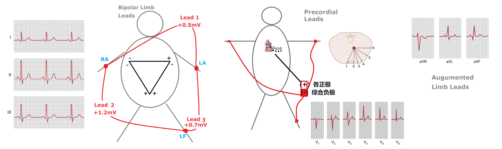
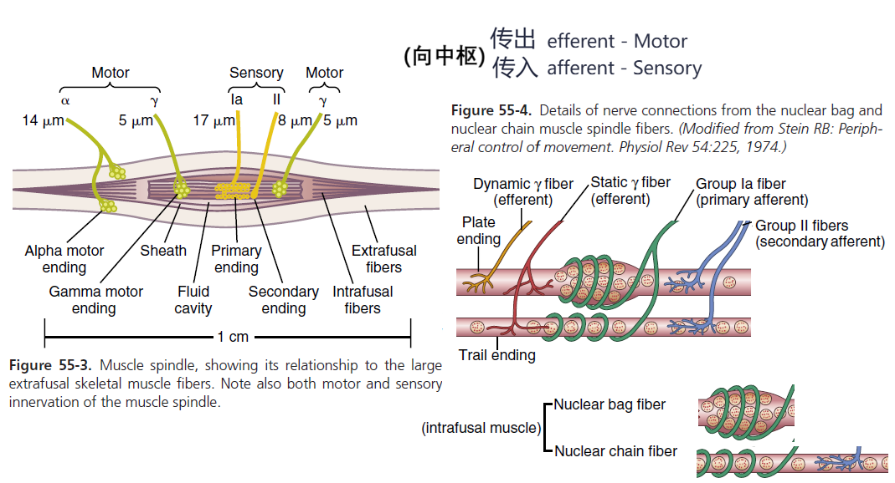

Medical Physiology
Guyton and Hall Textbook of Medical Physiology 摘要、笔记
注：1. 部分笔记中可能混淆了secretion(分泌出细胞)和excretion(排出体外); 2. 感知受体的“激活”默认指产生动作电位; 3. 脑部/神经系统相关的一切都有待补充学习，至少需要先了解一下解剖结构; 4. 部分章节的中文翻译/Study This Videos/Pathophysiology; 5. 简写：激活(+)/抑制(-)
| 计划 | 已完成进度 |
|---|---|
| 第一轮-粗略笔记 | ok |
| 第二轮-纠错补缺 | -- |
| 第三轮-复习补充 | -- |
或许需要重新梳理一下 神经递质/荷尔蒙 (+/-)，都加上符号
Ch 1 概览
- Human Physiology: explain the specific characteristics and mechanisms of the human body that make it a living being
- The basic living unit of the body is the cell. Each tissue or organ is an aggregate of many different cells held together by intercellular supporting structures (相同微环境).
- 人体60%是液体，包含：
- Intracellular fluid：相对静止的；potassium, magnesium, phosphate ions
- Extracellular fluid：持续流动的；sodium, chloride, bicarbonate ions, nutrients (oxygen, glucose, fatty acids, amino acids), waste products (carbon dioxide, wastes to kidneys....)
- Interstitial fluid
- Circulatory system：血液、淋巴液系统
- Homeostasis: maintenance of nearly constant conditions in the internal environment (extracellular fluid)
- Disease: A disruption to homeostasis；Extreme dysfunction leads to death; moderate dysfunction leads to sickness
- 代偿：身体为了回归稳态所尝试的努力；有时为了某个tissue的稳态可能会打破另一个地方的稳态，因此有时难以区分primary cause与代偿反应
- 获取nutrients
- Respiratory System：oxygen
- Gastrointestinal Tract：carbohydrates, fatty acids, amino acids
- Liver and Other Organs That Perform Primarily Metabolic Functions：分泌酶、储存
- Musculoskeletal System：获取食物
- 排出waste products
- Lungs：Carbon Dioxide
- Kidneys：血液中大部分wastes
- Gastrointestinal Tract：Undigested materials
- Liver：drugs and chemicals
- 身体机能的调控系统
- Nervous System：sensory input portion + central nervous system (or integrative portion) + motor output portion
- Hormone Systems：transported in the extracellular fluid to other parts of the body to help regulate cellular function
- Control Systems
- Negative Feedback Loop：超出正常范围会有抑制机制；维持稳态
- Positive Feedback Loop：其提升会刺激进一步提升；(e.g. 受伤召唤凝血因子、Childbirth、nerve signals)；受Negative Feedback抑制、防止升级至危险状态
-
Adaptive Control：大脑发送前馈信号控制peripheral parts进行动作，即，信号传递至外围部位后，活动部位返回sensory nerve signals，大脑会依据状况修正后续动作
{kind=link}
Ch 2 细胞器
-
- Protoplasm
- water: 占70%~85%
- electrolytes: potassium, magnesium, phosphate, sulfate, bicarbonate, and sodium, chloride, and calcium
- proteins: structural, functional
- lipids: phospholipids, cholesterol
- carbohydrates: 提供能量或合成glycoprotein
- Cell Membrane：双重磷脂
- Endoplasmic Reticulum：Rough ER 合成蛋白，Smooth ER 合成 lipids
- Golgi apparatus：接收ER生成物，生成碳水化合物，下一步可形成 Lysosomes 等分泌小泡
- Mitochondria：数量不定，生成ATP
- Cytoskeleton：Filament and Tubular Structures
- Nucleus：遗传物质
- Protoplasm
-
Endocytosis(胞吞)：Pinocytosis(胞饮)，Phagocytosis(胞吃/吞噬)
- Autophagy(自噬)：移除老化organelles
- 细胞移动：
- Ameboid motion：细胞一端伸出假足将自己固定到新的区域，向这个方向形变(后方发生吞噬、于前方Exocytosis，则成功挪动这一部分细胞膜)
- Cillary movement 纤毛运动，需要ATP与appropriate ionic conditions；e.g. 呼吸系统分泌粘液
{kind=link}
{kind=link}
{kind=link}
{kind=link}
{kind=link}
{kind=link}
{kind=link}
Ch 3 蛋白合成与细胞复制
- RNAs
- Small nuclear RNA (snRNA) directs the splicing of pre-mRNA to form mRNA(去除introns)
- mRNA 指导合成蛋白(消耗ATP)：Transfer RNA (tRNA) 运输AA，Ribosomal RNA (rRNA) 提供核糖体结构框架
- MicroRNAs (miRNAs) 与mRNA结合(blocking)，调节转录和翻译
- Polyribosomes：由多个核糖体串连在一条mRNA分子上高效地进行肽链的合成
- ATCG化学式
- Codon Table 详见 NCBI-The Genetic Codes，同一种氨基酸具有两个或更多个密码子(简并密码子)
- Gene transcription in eukaryotic cells
- 细胞通过 Mitosis 进行复制
- Interphase：interval between mitosis，其占细胞95%以上生命周期。DNA在分裂开始前约10h开始复制，并且需要通过 Proofreading (是否与模板一致) 与 DNA Repair 以降低错误率。不过，假定人类30年一代，预计依旧会累计10个以上的Mutation 给下一代
- Prophase 前期：纺锤体形成，染色体被压缩
- Prometaphase 前中期：核膜消失，microtubule aster 结合着丝粒，将成对的chromatids 向两极施加拉力
- Metaphase 中期：asters 相互挤压、形成纺锤体，chromatids 于赤道面排列
- Anaphase 后期：chromatids 被拉开
- Telophase 末期：两边各自形成新的核膜，microfilaments 形成 contractile ring 将细胞分开
- Mitosis的调节：Growth Factors，细胞密度(相互挤压、环境中 cell's own secretion 的浓度)
- 细胞寿命：每次复制端粒(Telomeres)会变短，骨髓中的端粒酶可修复端粒长度
- Apoptosis：细胞程序性死亡：shrink，condense，disassemble cytoskeleton，在表白加上标记、以便免疫细胞及时清除
- Necrosis：细胞被动死亡，内容物释放到微环境
- Oncogene 一般是促进细胞生长的基因、缺乏抑制，因此 Cancer 中细胞无度生长、与正常细胞争夺养分；Cancer 可能来源：Ionizing radiation，Chemical substances，Physical irritants 如持续磨损，家族遗传，Certain types of oncoviruses
{kind=link}
{kind=link}
{kind=link}
{kind=link}
Ch 4 跨膜运输
-
Diffusion 由物质浓度、电离浓度综合驱动
- 脂类可通过细胞膜扩散；水溶性小分子可通过 protein “pores” (aquaporins) 渗透，比水大20%，渗透效率降低1000倍
- Protein channels 有两个特性：
- selectively permeable(e.g. K离子专用通道)
- electrical signals / chemicals 控制 gates 开合(voltage-gated / ligand-gated)
- 受限于Carrier protein 的形变速度，Facilitated diffusion 有速度上限(上图所示Vmax)
- Nernst equation：EMF (in millivolts) = ±61*log(C1/C2)；EMF 指细胞膜内外 voltage；C1、C2 指细胞膜内外待扩散物质的浓度；此式满足则达成扩散平衡
- Osmosis：水分子也可以渗透通过细胞膜；由渗透压驱动
- 1 osmole = 1mol osmotically active solute 存在于1L溶剂中；e.g. 1mol某物质溶于水形成 2mol ions，则 2 osmoles；若不分解成ions，则依旧 1 osmole
- 区别：Osmolality(osmoles per kilogram of water)，Osmolarity(osmoles per liter of solution)
-
Active transport 可逆浓度梯度转运物质，由载体蛋白消耗能量驱动
- Primary：消耗ATP运输某种物质；e.g. Na-K Pump 维持平衡，Ca Pump 储钙于内质网中，H Pump 胃酸生成
- Secondary：形成浓度梯度/...，以运输另一种物质
- Co-Transport
- Counter-transport
- Co-Transport
- Primary：消耗ATP运输某种物质；e.g. Na-K Pump 维持平衡，Ca Pump 储钙于内质网中，H Pump 胃酸生成
Ch 5 动作电位
本章节关注 Nerve Cells；Cardiac Cells 也有电位(Ca，此处不述)
-
上图，静息状态表格指膜内电位相对于膜外电位，e.g. -60mv 表示膜内电位负于膜外 60mV；静息电位一般指此时的细胞膜内侧电位
-
静息状态时达成平衡，Nerve fiber 细胞内部含有大量K，细胞外部含有大量Na。因为多种离子的平衡电位不同 (K:–94 mV,Na:+61mV)，静息电位可用 Goldman equation 计算，其值为负，因：
- Na-K pump: 泵出3 Na+, 泵入2 K+
- K "leak" channels: 渗出 K+
- 将电位从−70mV提升至10mV的测试中，可以发现Na、K 通道的反应速度不同
- 标准动作电位示意图(左)；带节律的动作电位(中)调节心脏节律，超极化(Hyperpolarization) 与 K 流出有关；Plateau(右)延长了去极化的时间(与Ca通道有关)，使心脏肌肉的收缩时间相同
- 动作电位激发后 Na 涌入细胞，到达电位顶点后通道迅速关闭；随后 K 加速流出细胞，到达平衡电位后通道关闭
- 动作电位可沿着 conductive fiber 向两侧传导；也可 Saltatory conduction (跳跃式传导，更快)：Schwann cell 包裹 nerve fiber，间隔着留下 Node of Ranvier 以供跳跃式传导
- 当前一个动作电位未结束时，后一个电位不会被激活，因为激活后不久Na通道就会关闭，直至再次达到静息电位前都不能再激活；下图(B)无法被激活，因为此时正处于 absolute refractory period (1/2500 second for nerve fibers)；下图(A)因为impulse未达到动作电位而未能激活
- 细胞外液钙离子浓度高会降低细胞膜对钠离子的通透性，因此 Ca 是 stabilizer
-
一些麻醉药提高Na通道的激活难度(提高 excitability threshold)
-
刺激神经元产生动作电位：升高静息电位（抑制则反之）
- 增加Ca通道，令更多Ca进入细胞质
- 减少K通道，K+无法离开细胞
- 减少Cl通道，Cl-无法进入细胞
- 增加兴奋性膜受体/减少抑制性膜受体
Ch 6-7 骨骼肌
- 骨骼肌(Skeletal Muscle)的肌肉纤维束(Muscle fasciculus)由许多肌纤维(Muscle fiber)组成；每一根肌肉纤维外由肌膜(Sarcolemma)包裹、延申成横向的 T小管(Transverse tubule) 使动作电位得以快速传递，由肌浆(Sarcoplasm)填充、纵向的肌浆网(Sarcoplasmic Reticulum)调节钙离子；纤维内依次排列着多个肌节(Sarcomere)
- 骨骼肌收缩
- 动作电位由 Nerve 传递至肌纤维，Nerve 分泌少量神经递质 乙酰胆碱(Acetylcholine)
- 乙酰胆碱打开通道，大量Na离子涌入肌膜内侧、导致局部去极化，进一步打开钠离子通道，在膜上产生动作电位
- 动作电位继续扩散，并且至肌纤维的中心、释放肌浆网内钙离子
- 受钙离子刺激，Actin and Myosin filaments 开始滑动，肌肉收缩
- (当 Active sites 未暴露时)Myosin Head 裂解ATP，产生 ADP+Pi+能量，此时其与Actin垂直
- 钙离子结合 Troponin complex，其形变拉动 tropomyosin 露出 Active sites 以结合 Myosin
- Myosin 结合 Active sites 后形变倾斜，达成牵拉
- 牵拉后释放ADP+Pi，结合新ATP，重复...
- 在几分之一秒后，钙离子抽回肌浆网，肌肉收缩停止
- e.g.骨骼肌)收缩时，Motor unit 指被一个Nerve(多个末梢)控制的一束纤维，它们同时收缩
- 骨骼肌能量来源：phosphocreatine(5-8s即可用)，glycolysis(水解glycogen以用于生成ATP)，oxidative metabolism(最慢)
- 两种肌纤维
- slow fiber (red muscle)：更小，血管发达、供氧更好(偏向 oxidative metabolism)，nerve 更少
- fast fiber (white muscle)：更大，更偏向使用 glycolysis 等可以无氧代谢的快速能源(线粒体更少)，存储大量钙离子
- 骨骼肌张力(Tone)：即使处于休息状态，通常也会有一定程度的紧绷，由来自脊髓的低频率神经冲动引起
-
Muscle Remodeling
- Hypertrophy and Atrophy(肥大/萎缩)：当肌肉蛋白合成加速/泛素水解时发生；肌肉失去神经支持也会快速萎缩(失去收缩能力后很难再恢复弹性)
- Adjustment of Muscle Length：当肌肉被拉伸过长时发生
- Hyperplasia of Muscle Fibers：纤维数量的增加(不是纤维肥大)，分裂自此前已变大的纤维
-
运动终板(Motor End Plate)：神经元与肌纤维相接触的部位，被多个 Schwann cells 覆盖，使其与周围的液体隔绝(神经信号 乙酰胆碱不会快速发散，只能从 synaptic cleft 走)。
- 乙酰胆碱会被迅速分解，因此信号不会一直持续
- 肉毒杆菌毒素(botulinum toxin)：使神经末梢减少释放乙酰胆碱
- Fatigue of the Junction：持续释放乙酰胆碱后，乙酰胆碱储备不足
- carbachol、nicotine 作用类似乙酰胆碱，且代谢缓慢；这样的持久刺激可能造成肌肉痉挛(spasm)；一些使乙酰胆碱酯酶失活(使之不能快速分解)的药物也可能达成这样的效果
- 骨骼肌的动作电位与神经元的相似(参考Chapter 5)，一些参数不同：
- 静息膜电位约比神经元更负10到20毫伏
- 动作电位持续时间为 1-5 ms (更长)
- 传导速度为 3-5m/s(更慢)
Ch 8 平滑肌
- 平滑肌(Smooth Muscle)一般有两种型态
- Multi-Unit：每一根纤维都独立地运作、受神经控制；在需要精细控制的地方出现，e.g.眼睛
- Unitary (Visceral)：纤维成片、束排列为一个整体，细胞膜相互粘附、离子可以通过这些缝隙连接在细胞间流通；出现在内脏壁、血管导管处(Stress-Relaxation、reverse stress-relaxation：压力缓冲的能力很强，例如膀胱壁)
- 平滑肌收缩：
- 神经冲动/递质-->动作电位(仅Unitary有，Multi-Unit太小了、故无)-->钙离子泵
- CaM 结合钙离子后激活 MLCK，使 Myosin 磷酸化、附着 Actin，肌肉收缩
- 钙离子被泵出后 Myosin 不再磷酸化，同时 Myosin phosphatase 进行去磷酸化，肌肉放松
- 对比骨骼肌收缩：
- 神经递质因器官而异；此外，Unitary 通常可以由非神经施加的刺激引起收缩(e.g.stretch使阈值更易达到、于是自动节律的电位也可以造成收缩)(e.g.激素，氧气)
- 钙离子更多来自于胞外(骨骼肌Ca多来自肌浆网)
- 没有 troponin，故而对钙离子的反应也更慢、Myosin Cross-bridges(收缩)更慢
- 耗能更少
- Dense bodies(同时也是 intracellular protein bridges) 代替了 Z disk 位置
Ch 9 心脏
血液循环：Lungs --> Left atrium --> Left ventricle --> Aorta(body) --> Right atrium --> Right ventricle --> Lungs
(ventricle--心室，atrium--心房)
-
心肌的动作电位扩展至T小管，激活 L-type Ca channel 令钙离子进入细胞，激活肌浆网中的钙离子也泵入胞质；收缩结束后钙离子泵出细胞
- 有Plateau，因为开启L型钙离子通道使Ca流入细胞，延长了去极化(Depolarization)的时长
- 骨骼肌中过早的收缩会引起 wave summation；但心肌在达成复极化(Repolarization)前无法再次激发动作电位
-
Cardiac Muscle
- Atrial Muscle
- Ventricular Muscle：Pump
- Conductive Muscle Fiber：传递电子信号，使心脏模块(atrium、ventricle)内部保持同步缩放(Syncytium：Fibers 互相贴合为一个整体，由 Intercalated discs 传递 ion signals 以保持节律)
-
Cardiac cycle = Systole + Diastole；心跳加速时，Diastole 部分时长缩短最多
- Isovolumic: 收缩/舒张导致压力变大，但valve还没有开启，因此血液容量无变化(等容收缩/舒张)
- Left Heart 视角
- (----Diastole----)
- Mitral valve 打开，血液从 Left atrium 流入 Left ventricle
- (----Systole----)
- Mitral valve 关闭，防止 Left ventricle 血液逆流入 Left atrium (同时等容收缩)
- Aortic valve 冲开，开始 ejection
- Aortic valve 关闭(同时等容舒张)
- Phonocardiogram 视角
- P：S-A node firing，atrium 中信号开始传导、
- QRS：A-V node firing，ventricle 中信号开始传导、收缩
-
影响心输出量(Cardiac Output)的因素
- 自主神经系统(见下章)
- 细胞外过量K离子可能阻断心脏冲动的传导(去极化，使膜电位不那么负，导致动作电位的强度变弱)；相对的，细胞外过量Ca离子可能导致心脏持续痉挛性收缩
- 动脉压
Ch 10 心脏节律
-
自主神经系统(autonomic)调节心跳
- 副交感神经(parasympathetic)：迷走神经(Vagi, Vagus nerves)控制 S-A node、A-V node，控制心率(e.g. acetylcholine 减慢心跳)
- 交感神经(sympathetic)：直接影响肌肉收缩，可同时控制心率、收缩强度(e.g. Norepinephrine 加速离子置换：K-加速达到电位阈值、Ca-收缩增强)
-
节律传递：Atrium先收缩、随后再Ventricle
- (Right Atrium 中)S-A node 产生自主节律脉冲，通过 Internodal pathways 传导至 A-V node
- (A-V bundle 处延迟一会儿，随后信号进入ventricles)
- (Ventricle 中)信号传递给 Purkinje fibers 的左右 bundle
-
自主节律：S-A node、A-V node 可以受Vagi调节，也可以自主产生节律脉冲(其静息电位不如正常的负)；正常心跳节律由 S-A node 产生；A-V node 的自主节律 S-A node 慢，当外源信号迟迟不至时才起作用(escape beat)；Purkinje fibers 的自主节律更慢
Ch 11-12 心电图


-
PR区间 AV node 慢速传递电信号，QT区间 Ventricle 收缩
-
心肌去极化(Depolarization)时，大量 Na 进入细胞使得胞内正电荷、胞外负电荷(-)；而 极化(Polarized) 后达成静息电位，此时胞外正电荷(+)
- PQRS过程中的电荷分布与心电图
- P (Atrial P Wave)：atria 从 sinus node 开始极化; 其从远端部分开始去极化，产生 Atrial T Wave
- QRS：信号从 A-V bundle 处进入 ventricles 并扩散，使之去极化
- T：ventricles 复极化；注意，因为最先极化的 septum and endocardial areas 收缩时间较长，因此是从 apex 开始复极化
- 当ventricles极化耗费过长时间传递时，有可能 septum 等已经完成收缩，先进行复极化，(或者是药物导致部分区域加速完成去极化、先行复极化)，此时会有异常的 T wave 图像
- 电流趋势方向：负电荷 --> 正电荷
- PQRS过程中的电荷分布与心电图
-
EKG/ECG Leads 摆法：不同 Leads 都可通过正负极之间的电流测得电信号的大致方向以形成心电图
- (正负电极测量两个位点电位之间的差别、方向，注意图中符号)
- Bipolar Limb Leads：正负极摆法如图；其中 Leads 2 最符合电信号趋势，因此信号最强
- Precordial Leads：肢体合并为整个负极，将正极放置于心脏周围不同处，可以分辨出整个信号传导过程
- Augmented Limb Leads：aVR(Right arm 正极，其余二者负极)，aVL(Left arm 正极，其余二者负极)，aVF(Left Foot 正极，其余二者负极)；是 Bipolar Limb Leads 的信号加强版
-
Vectorcardiogram：趋势向量(不同时间)的轨迹图
-
QRS 的 Mean electrical axis：确定 QRS 时 Bipolar Limb Leads 2个方向上的向量长度(所有正数值-所有负数值)，二者顶端的垂线相交于某一点、连通原点得到一个新的向量轴
- 对于正常的 ventricles，其标准值是 59°(在 20°-100°之间都是正常的)；改变 apex 的位置会造成一定程度的 axis shifts：躺下(to left)、站起(to right)
- 单侧心肌异常/信号传递受阻可能导致 axis 偏移：因其去极化时间变久，axis转向此侧，例如-单侧心室肥厚，单侧 Bundle Branch Block
-
QRS的范围一般在 0.5mV 至 2mV 之间
- 高于 4mV 则认为有高血压：心脏的某一部分负荷过重，肌肉量增加，更多电流
- 过低则可能：有陈旧性心肌梗死导致肌肉量减少；或心包积液(pericardial effusion)过多，使大部分电信号通过积液传递，降低到达身体外表面的心电图电压；或肺气肿形成绝缘体包裹心脏
-
正常QRS复合体持续0.06 ~ 0.08秒，超过0.09则不正常
- 心室肥大或扩张，QRS延长至0.09 ~ 0.12秒
- 传导系统(例如-Purkinje system)被阻塞：QRS持续超过0.12秒
- 疤痕也会减慢传递速度，因为信号需要绕过它
-
损伤电流(current of injury, COI)：部分心肌细胞一直处于去极化状态，使电流异常，可测得 J point
- 不能完全复极化：机械损伤使膜保持透性
- 感染：肌膜损伤
- 局部缺血：局部冠状动脉闭塞
- 以 J point 为 Baseline(排除杂乱电流信号)，可结合不同leads的心电图，以确定损伤部位：绘制 Injury potential 的 Mean electrical axis，新向量的负端指向 ventricles 中损伤的位置
{kind=link}
{kind=link}
{kind=link}
{kind=link}
{kind=link}
Ch 13 心律失常
| -- | -- | 机制 |
|---|---|---|
| ABNORMAL SINUS RHYTHMS | TACHYCARDIA (心跳加速) |
sympathetic nervous system：体温上升1摄氏度，心跳每分钟加速18下 |
| -- | BRADYCARDIA (心跳减慢) |
parasympathetic nervous system(Vagal Stimulation)；或，运动员静息状态下心跳较慢 |
| -- | SINUS ARRHYTHMIA | 髓质呼吸中枢的信号外溢到邻近的血管舒缩中枢，影响了sympathetic/vagus传递给sinus的信号：深呼吸加速心跳，呼气减慢心跳 |
| 心内传导通路阻塞 | SINOATRIAL BLOCK (S-A node block) |
只能依赖更慢的 A-V node 的自主节律产生P wave，导致心率变慢 |
| -- | ATRIOVENTRICULAR BLOCK (A-V node block) |
First-Degree Block：P-R逐渐延长后心跳漏拍 Second-Degree Block：P-R长度固定，但随机出现dropped beats(P wave无法传导成QRS) Third-Degree/Complete Block：QRS随机出现，与P完全无关联 病因：可能由于 A-V node 缺血/疤痕压迫/炎症，或 vagus nerves 极度兴奋，或药物：digitalis/beta-adrenergic拮抗剂 Stokes-Adams Syndrome: 突然出现Complete Block，等待Ventricular节律期间缺血昏迷 |
| -- | Ventricular内部阻塞 | 可能由于Purkinje system跟不上加速的心跳(ELECTRICAL ALTERNANS)，或者缺血/疤痕压迫/炎症/拮抗剂导致Purkinje system阻塞 |
| PREMATURE CONTRACTIONS 早搏/异位(ectopic)心跳 |
房性早搏(PAC) | P wave过早出现，P-R缩短(异位信号起源于atria中靠近A-V node处)，与下一个收缩的间隔会稍微延长(因sinus node 激活较晚、所以discharge late) 常见于：运动员、吸烟、睡眠不足、摄入过多咖啡、酗酒... |
| -- | A-V NODAL OR A-V BUNDLE | 异位信号起源于A-V node，信号同时传入atria、ventricles；P wave叠加至QRS |
| -- | 室性早搏(PVC) | 异位信号起源于ventricular中，QRS延长(因为信号不是通过高速Purkinje system传递的)、high voltage；T wave 总是与QRS极性相反 long QT syndrome (LQTS)：增加室性心律失常的易感性；病因：低镁/钾/钙血症... 或服用过量抗心律失常的药物 |
| PAROXYSMAL TACHYCARDIA (阵发性心动过速) |
心房/Nodal/心室都可能突发快速节律信号，无清晰起因 | 其中，室性心动过速通常源于严重的缺血性损伤，且容易引发 ventricular fibrillation(在一系列早搏的刺激下) |
| VENTRICULAR FIBRILLATION (室颤) |
致死，需要 1 min内 除颤 | 心室肌肉群发生无序的激动，其节律和舒缩功能消失；病因：电击/按压心脏/缺血/... |
| ATRIAL FIBRILLATION | cardic output 降低(但不致死，因为还有passive filling) | -- |
| CARDIAC ARREST | 失去心脏中所有信号 | 深度麻醉/缺氧/... |
{kind=link}
{kind=link}
{kind=link}
{kind=link}
Ch 14 血液循环
-
血液循环的基本特征
- 血液可按Tissue的需求调节
- Cardiac output = 所有 local tissue flows 之总和
- Arterial pressure regulation 不受 local blood flow control 与 cardiac output control 的影响
-
Velocity = Flow / Cross-Sectional_Area
- Flow恒定为Cardiac output，故而横截面小者流速快
-
Resistance：以PRU(Peripheral Resistance Unit)为单位，见Ohm’s law
- 近血管壁处阻力比血管中心处大
- 增加Viscosity(例如增加细胞)可以提高Resistance
-
Conductance = 1/Resistance = 与(Vessel_Diameter^4)成比例
- 大血管的Conductance = 其所有分枝的Conductance之和
-
Blood Pressure: the force exerted by the blood against any unit area of the vessel wall
- 1 mmHg = 1.36 cm water pressure
-
Ohm’s law：压力梯度与阻力决定血流量
- Flow = (Pressure_1-Pressure_2)/Resistance
- 1 ml/sec = (1 mmHg)/(1 PRU)；
- 由 Ohm’s law 对应 Systemic pressure(100mmHg)与 Cardiac output(100 ml/sec)
-
Poiseuille’s law: 影响流量的各种因素
- Flow = Pi × (Pressure_1-Pressure_2) × (Vessel_Radius^4) / (8 × Viscosity_coefficient × Vessel_Length)
-
Reynolds’ number 判别粘性流体流动状态
- Re = Velocity × Vessel_Diameter × Density / Viscosity_coefficient
- 数值越大越趋向于 Turbulence，例如：笔直光滑血管中 >2000、分支血管中 >200~400 (arteries中经常是湍流)
-
Autoregulation：根据血压调节血管的 dilation/constriction
Ch 15 动脉-静脉
-
Vascular distensibility = Increase_in_volume / (Increase_in_pressure × Original_volume)
- 扩张性：压力每升高1毫米汞柱，血液量增加的倍数
- 允许血管适应心脏的脉动输出并平均化压力脉动
- 血管中最易扩张的是静脉(大约是动脉的8倍)，储存大量额外血液
-
Vascular_compliance = Increase_in_volume / Increase_in_pressure
- 顺应性：压力每升高1毫米汞柱，血液的增量
- 全身静脉的顺应性约为相应动脉的24倍(8倍扩张性×3倍容积)
-
可以使用 Volume-pressure curves 来表示压力与体积的关系
- 全身动脉系统中，容积通常在700毫升左右，此时平均动脉压是100 mmHg；当容积降至400毫升时，动脉压迅速降为0
- 全身静脉系统中，容积通常在2000到3500毫升之间；其顺应性很高，故而人体可以承受多达半升的快速输血
- 交感神经刺激血管张力(vascular tone)升高、降低顺应性，血压升高；交感神经抑制同理
-
Delayed Compliance of Vessels：容积变动的初期血压大幅变化，但几分钟到几小时内可通过血管壁中平滑肌的渐进延迟拉伸恢复正常
-
Pulsations(脉搏)：动脉承受着心脏每一次收缩的输出压力，舒张期又无血流
- 当血液流至毛细血管时，Arterial tree的顺应性将脉搏降低至几乎无，令血流平缓连续
- 图中 Sharp incisura 是由 valves 开合产生的
- Pulse pressure = Stroke_volume / Arterial_compliance
-
测血压：压迫动脉至无血流(脉搏)，逐渐松开，过程中记录第一次出现声音时的血压(收缩压)、最后一次出现声音时的血压(舒张压)
- 平均血压更接近舒张压，因为舒张耗时更长(除非心动过速时、舒张更短)
- 随着年龄增加，血压也逐渐增加
-
Central venous pressure = Right atrial pressure，受以下两个因素的影响
- 心脏泵血入肺的能力：right atrium -- right ventricle -- lungs (泵血能力更强，造成的压力更高)
- 血液从 peripheral veins 回收至 right atrium 的趋势(e.g. vessel tone升高，更多血液回流入心)
-
由于其顺应性，Large veins 对血液流动的阻力几乎为零，但在进入胸腔后会有一些压迫点造成一些血流阻力，故而平躺时外周小静脉的压力通常比Right atrial高 4-6 mmHg
- 例如：大气压使颈静脉塌陷，第一根肋骨压迫手部静脉，不同器官和腹内压力的压迫，...
-
重力也会对静脉压造成影响，站立时，接近足部的压力最高
- 腿部的肌肉收缩起到泵血的作用，Venous valves 防止过程中静脉血回流
- 怀孕、长期站立会让腿部静脉持续高压，损伤 Venous valves，血液无法正常泵出、造成静脉曲张(Varicose Veins)
-
人体血液储备包括：(其中静脉存储了约65%的血液)
- spleen：约 100 ml 血液
- liver：约 几百 ml 血液
- large abdominal veins：约 300 ml 血液
- venous plexus beneath the skin：约 几百 ml 血液
- heart： 50 ~ 100 ml 血液(交感神经刺激时收缩放血)
- lungs： 100 ~ 200 ml 血液(当肺动脉压降至较低值时)
{kind=link}
{kind=link}
{kind=link}
{kind=link}
{kind=link}
{kind=link}
{kind=link}
Ch 16 微循环-淋巴系统
-
毛细血管(Capillary)的 Microcirculation: the transport of nutrients to the tissues and removal of cell excreta
- Capillary Wall 非常薄，仅 1 cell thick，可通过 Caveolae 运输脂溶性物质(例如 氧气、二氧化碳)
- Precapillary sphincters 控制进入毛细血管的血流量(根据需氧量)
- Intercellular cleft (内皮细胞之间的‘Pores’)，可通过水溶性物质(例如 sodium ions、glucose)
- brain：很严格，只允许通过water, oxygen, carbon dioxide
- liver：很宽松，允许几乎所有plasma中溶质通过，包括蛋白
- gastrointestinal capillary membranes：中庸
- glomerular capillaries of the kidney：其内皮细胞有被称为 fenestrae 的孔(仅可通过小分子)，故而不需要通过 clefts
-
血管舒缩(Vasomotion): 由于 sphincters 的间歇性收缩，血液在毛细血管中断断续续的流动
-
Interstitium主要由 Collagen fibers(骨架)与 Proteoglycan filaments(gel-like填充物)组成
- 水肿(edema)时，会存在大量 free fluid
-
静水压(hydrostatic pressure) v.s. 渗透压(osmotic pressure)
- 静水压 P = rho × g × height: 流体在接触表面的每单位面积上施加的垂直力(由于重力作用，静水压会在任何时间点施加，在底部最大)
- 渗透压 π = iCRT；其中 i=Vant_Hoff因子，C=溶质的摩尔浓度，R=通用气体常数，T=温度
-
capillary 通过 Diffusion 实现与 interstitial fluid spaces 之间的物质交换
- 由于发生大量水交换(80倍于血流量)，最主要的物质交流还是通过 Intercellular cleft
- 高浓度的物质更有可能被扩散出去，不过同时也需要考虑此物质的渗透性(Permeability)
- Net filtration pressure (NFP) 是血管内/外，血压、渗透压的综合效果(更多液体渗入，或更多液体渗出)，统称这四个力为 ‘Starling forces’
- 液体从血管至间质：Filtration = Kf × NFP，其中 capillary filtration coefficient (Kf)衡量渗透性
-
毛细血管的静水压可通过 micropipette cannulation 直接插入血管测量，或测量其周边的松散组织，不同方法得到的数值不同
- 毛细血管的静水压为 Filtration 提供助力：血浆胶体(Plasma Colloid)的渗透压约为 28 mmHg(19 mmHg 来自其溶质蛋白，9 mmHg 来自 Donnan effect - 与蛋白结合的阳离子)，这大于间质的渗透压、光靠渗透压无法使液体渗出至间质；所以动脉中静水压很高令总体力向外、渗出液体，静脉中则反之回收液体；但总体而言力是向外的，因为还有淋巴系统从间质中抽取液体
- 大多数组织中，由于淋巴系统的缘故，间质可以维持负压、从血管中抽取液体
- 在一些被紧密包裹的组织中，间质是正压、但小于其包囊组织对外部的压力(有压力差则可以发生 Filtration)；例如，肾脏被纤维囊包裹，肾间质液压约为 +6 mmHg，纤维囊压约为 +13 mmHg；其他例子如 巩膜包裹的眼球、被 cranial vault 包裹的大脑
-
淋巴系统(lymphatic system)从间质中带走多余液体(可以调节 interstitial fluid pressure，保持负压防止结缔组织水肿)，带走不能再被吸收的蛋白或其他物质；最终通过返回到静脉系统
- lymphatic vessels 的 Valves 使得液体只进不出；如果其不堪重负，可能会发生水肿
- 淋巴液的蛋白浓度很高，且吸收了食物中几乎所有 fats(肠道不能吸收)，另外可能还有细菌、病毒等(lymph nodes中有免疫细胞)
-
提高 interstitial fluid pressure 可提高 lymph flow，方法包括：
- 提高毛细血管的静水压
- 降低血浆的渗透压
- 提高间质渗透压
- 提高血管壁的通透性
-
lymph flow 机制：(并且有valves防止回流)
- 骨骼肌收缩
- 身体各部位的运动
- 邻近淋巴管的动脉搏动
- 体外物体压迫组织
{kind=link}
{kind=link}
{kind=link}
{kind=link}
{kind=link}
{kind=link}
Ch 17 局部血流调控
-
各 tissue 的血流量都是按需控制的
- 肾脏起到过滤血液的作用，因此血流量很大
- 肌肉在放松时代谢弱，因此不充血
-
Acute control: Precapillary sphincter 控制 rapid 血管收缩/舒张
- Vasodilator Theory: 代谢物令血管扩张
- Oxygen Demand Theory: Precapillary sphincter 存在周期性的开合(造成血管舒缩)，其收缩需要氧气；如果氧含量不足，则血管扩张的状态更持久
-
Autoregulation：Arterial Pressure 突然变化，血流初期剧烈变化但逐渐回归正常水平
- Metabolic theory: 剧烈加强的血流洗去代谢物，令血管舒张
- Myogenic theory: 剧烈加强的血流拉伸血管壁的平滑肌，使其收缩，导致血流阻力增加，血流减缓
- 肾中 tubuloglomerular feedback： 当被滤出的液体量过多时，macula densa 发送信号，减少肾脏血流量
- 大脑血流量不仅受氧含量控制，也受 carbon dioxide、hydrogen ions 的影响
- 皮肤血流量受温度控制：温度上升，血流增加，出汗增加
-
Long-term control: 某组织代谢率发生变化，长期需要大量血流，会长出新的血管(angeogenesis)，或发生 Vascular Remodeling
{kind=link}
{kind=link}
| Acute | 血管收缩 Vasoconstrictor |
血管扩张 Vasodilator |
|---|---|---|
| 代谢物 | -- | ADP Ions... |
| Endothelium-Derived | Endothelin: 受伤时产生，防止失血过多 | Nitric Oxide: 因 Shear stress 产生；也可能当 angiotensin II 收缩血管时释放少量 NO 以防过度收缩 |
| Humoral | (alpha receptor) Norepinephrine & Epinephrine Angiotensin II Vasopressin |
(beta receptor) Epinephrine (special case & mild) Bradykinin Histamine |
| Ions | calcium |
potassium magnesium hydrogen ion Anions: acetate and citrate carbon dioxide |
| -- | -- | ！静脉容量更大，所以其收缩影响更大 |
{kind=link}
Ch 18 自主神经系统
-
交感神经系统(Sympathetic Nervous System) -- “Fight or Flight”
- 身体两侧各有一条交感神经链(sympathetic chain)，通过胸脊神经与部分腰脊神经连接脊髓
- 收缩血管；减少 tissue 血流，令血液流入心脏--升高血压；增强心率、收缩强度
- Norepinephrine 是交感神经系统血管收缩神经递质，也可以由 Adrenal Medullae 产生
-
副交感神经系统(parasympathetic nervous system) -- “Rest and Digest”
- 起自迷走神经(vagus nerves)背核，分布于内脏器官
- 舒张血管；减低血压；减慢心率
-
脑部的血管舒缩中枢(Vasomotor Center)自动调节血压：高压时舒张血管、降低心输出量，低压时相反
- vasoconstrictor area 延伸至脊髓，正常情况下会持续的通过交感神经系统发出血管收缩信号(0.5-2/s，称为sympathetic vasoconstrictor tone)，令血管维持在半收缩状态
- vasodilator area 通过抑制 vasoconstrictor area 起作用
- sensory area 位于 medulla 下侧，通过 vagus 接受循环系统中感知细胞返回的信号、或减慢心率
-
Higher Nervous Centers (hypothalamus，cerebral cortex)可控制血管舒缩中枢
-
- carotid sinus 和 the wall of the aortic arch 分布有 感知血压高低(stretch)的 Baroreceptors 以及感知 Oxygen Level 的 Chemoreceptors
- Pulmonary Artery 和 Right Atrium 中有 low-pressure receptors，当其 stretch 时可能心内血液过多，需要加大输出:
- Volume Reflex: 信号传递至下丘脑(hypothalamus)，减少抗利尿激素(antidiuretic hormone, ADH)的分泌，减少了肾小管对水的再吸收
- 产生心房利钠肽(atrial natriuretic peptide)，增加盐、水的排出
- 通过 Bainbridge Reflex 加速心跳(心跳加速后压力增大，激活 baroreceptors，但这个效果很快被 Bainbridge 覆盖掉)
-
CNS Ischemic Response: 当流向大脑的血液降低到危险水平时(血压极低<60 mmHg)的应急反应：心跳加快，血压急速升高(血管收缩造成，可持续约 10 min)
-
Cushing Reaction 升高大脑周围的血压：正常情况下脑脊液压力比动脉压稍低，但当二者压力差消失时，会压迫整个大脑并切断大脑的血液供应；此时会唤起 CNS Ischemic Response，提高动脉压
-
Abdominal Compression Reflex：压迫腹部，肌肉收缩放出储备血压，升高血压(肌肉紧绷也可以起到同样效果)
-
每一次呼吸循环，动脉压通常以波浪式升降 4-6 mmHg
- SINUS ARRHYTHMIA(呼吸中枢的信号外溢到邻近的血管舒缩中枢)
- 呼气时气压变化令胸腔血管扩张，暂时降低动脉压
- 胸廓血管中的 receptors 受到刺激
-
Vasomotor waves：除了由呼吸引起的小波外，还有一些由血管舒缩引起的波(有时高达 10-40 mmHg)，可能由交感神经/副交感神经拮抗产生
{kind=link}
{kind=link}
{kind=link}
{kind=link}
{kind=link}
Ch 19 肾脏与动脉压长期调控
-
动脉压升高时，促使肾脏排出多余水分(pressure diuresis)、盐(pressure natriuresis)；如图
- diuresis只是暂时的，排出最终会与吸收平衡
- 动脉压升的原因可能有两种：肾脏对压力更加耐受(曲线左移)；或由于盐/水吸收更大，平衡点上移
- 从长期尺度来看，对于正常的肾脏，盐/水吸收的变化不会影响动脉压的稳定(曲线陡峭)
-
长期动脉高压会造成预期寿命缩短：
- 心脏负担加剧
- 主要血管损坏(主要是脑部血管)
- 肾脏功能损坏
-
长期动脉高压的原因可能有：
- 高盐+肾脏功能损坏：对动物喂食大量盐，初期是由于细胞外液(Extracellular fluid)过多造成动脉压升高，后期则是因为 Peripheral Resistance 保持动脉高压；因此若肾脏功能不佳，应饮食清淡
- 醛固酮(Aldosterone，促使Na留在体内)过多：可能由于肿瘤等原因
-
Renin-Angiotensin System (RAS) 应对低压，20 min 内即可完全起效（提高血压）：
- Angiotensin Levels 正常的情况下，动脉压不会受盐摄入量的影响
- 当 Angiotensin II 过度表达时，盐摄入量增加会造成动脉压升高
- 当 ACE inhibition 发生时则没有 RAS(Angiotensin I 由 ACE 转化为 Angiotensin II)，动脉压较低
-
一些通过 RAS 达成的动脉高压
- One-Kidney Goldblatt Hypertension：移除一个肾脏后，如果余下的肾脏缺血，则其感知到低压信号，引起 RAS
- Two-Kidney Goldblatt Hypertension：一个肾脏缺血但另一个肾脏正常，缺血的肾脏引起 RAS，二肾脏都过量保留水、盐
- 受损的肾脏长期释放 Renin
- 主动脉缩窄(Coarctation of the Aorta)：身体下半部分(包括肾脏)供血不足引起 RAS，造成身体上半部分高压，而下半部分血液正常
-
Neurogenic Hypertension: 交感神经系统过度兴奋
-
Primary/Essential Hypertension: 缘由不知的高压，久坐不动者、超重者最有可能患病：
- 因脂肪组织更多，Cardiac output 增加
- 超重者交感神经系统过度兴奋，Angiotensin II and aldosterone levels 也更高
- 超重者 natriuresis mechanism 受损
- 对盐摄入的敏感性也与压力调节相关
-
治疗动脉高压：促使排出多余水、盐
- Vasodilator drugs：提高肾脏血流
- natriuretic or diuretic drugs
-
血压突然下降(e.g.出血)后的各种调节：血管紧缩(Acute)--> RAS
{kind=link}
{kind=link}
{kind=link}
{kind=link}
{kind=link}
{kind=link}
{kind=link}
Ch 20 心输出量-静脉回流
-
Cardiac Output = Venous Return = 每分钟泵出心脏的血液量
- 代谢水平越高，心输出量越高
- (Ohm’s law) Cardiac_Output = Arterial_pressure / Total_peripheral_resistance
-
调节心输出量(Acute)
- (Frank-Starling law) Venous Return 升高使心肌的拉伸程度变大，令其收缩力变大
- (right atrium) sinus node stretch 令心跳加速
- (right atrium) stretch 后激活 Bainbridge reflex，信号返回 vasomotor center，令心跳加速
-
Hypereffective Heart(Chronic)
- nervous stimulation: sympathetic stimulation and parasympathetic inhibition
- hypertrophy of the heart muscle
-
Hypoeffective Heart(Chronic)
- Arterial_pressure 过高，心脏泵血阻力大于泵血能力
- 心脏 nervous excitation 被抑制，而 nervous control提高控制心率与收缩强度控制心输出量
- 引起心律或心跳异常的病理因素
- 冠状动脉阻塞(导致心脏病发作)，心脏瓣膜病，先天性心脏病，心肌炎，心脏缺氧，...
-
- High Cardiac Output (Peripheral Resistance 下降)：Arteriovenous fistula (AV shunt) 中动静脉直接打通；或 Anemia 使局部缺氧令血管扩张
- Low Cardiac Output (Cardiac Factors 心肌能力下降)：心脏缺氧，...
- Low Cardiac Output (Decreased Venous Return)：Decreased blood volume, Acute venous dilation, Obstruction of the large veins, Decreased tissue mass, Decreased metabolic rate of the tissues
-
胸膜腔内压(Intrapleural pressure)越高(图示中线条越靠右)，则需要越高的 Arterial_pressure 以提升至相同水平的心输出量
-
影响 Venous Return 的因素，可用 venous return curve 展示
- (终点-静脉回流的阻力)右心房压力 (PRA)
- (起点-静脉回流的动力)体循环的充盈程度，受血液总量与交感系统影响，测量 mean systemic filling pressure (Psf)
- (路径-血液流动的阻力)外周血管与右心房之间的血流阻力，称为 resistance to venous return (RVR)
- Venous Return = (Psf-PRA) / RVR
-
根据 venous return curve 与 cardiac output curve 的交叉点确定 cardiac output情况
-
测量 cardiac output 的方法
- Oxygen Fick Principle: 测量肺获取的氧气量、血液含氧量变化，可推测参与肺循环的血液量
- Indicator Dilution Method: 注射 dye，检测其峰值出现的时间与平均浓度
{kind=link}
{kind=link}
{kind=link}
{kind=link}
{kind=link}
{kind=link}
{kind=link}
{kind=link}
{kind=link}
{kind=link}
Ch 21 骨骼肌、心肌供血
-
运动时大量血液涌入肌肉系统，因此心输出量升高作为补偿
- 肌肉松弛时血液可以流动，肌肉收缩时血液被挤出肌肉血管
- 静息时，大部分毛细血管不充血(dormant状态)，运动时才打开充血
-
(Ch 17)根据需氧量，Precapillary sphincters 控制进入肌肉毛细血管的血流量；也受代谢产物、盐离子等 Vasodilator 的影响
-
(Ch 20)交感系统提高了右心房压力，升高了心输出量，所以提高了涌向肌肉的血液量
- 去甲肾上腺素 Norepinephrine (Vasoconstrictor - alpha receptor)
- 肾上腺素 Epinephrine (Vasodilator - beta receptor) --- A special case
-
冠状动脉(Coronary arteries)为心肌供血
- 收缩时，心内膜下动脉丛(Subendocardial)收缩程度更强；舒张时其重新充血(故而很多时候 ischemia 起始于 Subendocardial，而不是 Epicardial)
- 交感神经增加供血，副交感神经减少供血
- 心脏的能量来源是脂肪 (more ATP per molecule)
- 过量 alpha receptor(导致血管过度收缩)，或者其他阻塞因素可能会导致心脏供血不足
-
如果Coronary Ischemia 引起心肌梗死(myocardial infarction)，可能致死
- 心输出量降低
- 肺水肿(血液滞留肺部，动脉中血液减少，引发增加血液量的反馈机制，进一步恶化情况)
- 心脏颤动(fibrillation)，可能由于
- 血流减少导致，细胞外钾浓度升高，心肌变得易兴奋
- 损伤电流
- 血压降低刺激交感神经，令心肌变得易兴奋
- 心肌无力常导致心室过度扩张，心脏脉冲传导的路径变长导致circus movements 发生
- 心脏破裂(rupture)
-
心绞痛(Angina Pectoris / Cardiac Pain)：当冠状动脉不足以供应心脏所需血流时，患者会感受到持续的疼痛，分布于心脏上方的胸骨，乃至左臂/左肩、颈部、侧脸，因这些部位共享同一脊髓节段的疼痛神经纤维
- 急性心绞痛治疗：硝酸甘油、硝酸盐(Vasodilator 减少泵血阻力，减轻心脏负担)
- 慢性稳定型心绞痛治疗：减少 Angiotensin 生成或阻塞其受体，阻塞钙离子通道；ranolazine 增强心脏对氧的利用效率
- 手术治疗：利用腿部静脉新造冠状动脉(Aortic-Coronary Bypass Surgery)，扩张阻塞的血管(Coronary Angioplasty)
{kind=link}
{kind=link}
{kind=link}
Ch 22 心力衰竭
-
心力衰竭(Cardiac Failure): 心脏泵血能力不足以支撑身体需求的情况
-
温和的心力衰竭发生后，心输出量下降，静脉中血液阻塞(damming)
- Acute: (Ch 18) 交感系统，Baroreceptors 等快速提升心率、心收缩强度、收缩静脉
- Chronic: 肾脏保存过量液体；作为对无法工作部位的代偿，心脏中有活力的部分会肥大(hypertrophy)
- 代偿失调(Decompensated)：如果代偿后，心输出量还是不能达到最低要求，则肾脏进一步储水、心脏负担加剧、陷入恶性循环；其治疗方式：
- digitalis：block Na出K入，胞内 Na 堆积则不能 Ca出Na入，胞内 Ca 堆积可增加心肌收缩能力
- diuretic drugs：增加肾脏排水
-
低排出量性心力衰竭(Low-output)会导致心原性休克(Cardiogenic Shock)，仅30%存活率：所有器官供血不足导致心脏泵血能力的进一步削弱，血液留存在器官中不能循环
-
高排出量性心力衰竭(High-output)，参考 Ch 20
- Arteriovenous fistula：动静脉联通导致阻力(RVR)降低
- beriberi heart disease：削弱心脏泵血能力；扩张血管导致阻力(RVR)降低，肾脏储存过量液体因此 体循环的充盈程度(Psf)升高
-
(Ch 19)长期来看，肾脏保留过量液体以应对心力衰竭
- 减少肾脏血流，降低肾小球滤过率(glomerular filtration rate, GFR)
- 激活 RAS: Angiotensin II
- Aldosterone 分泌增加
- 抗利尿激素(ADH)分泌增加
- 激活交感神经系统：减少肾脏血流；释放 renin；激活 alpha-adrenergic receptors，加强水、盐重吸收
-
当心脏充血过多时收到牵拉时会释放 Natriuretic peptides
- Atrial natriuretic peptide (ANP) 由 atrial walls 产生
- Brain natriuretic peptide (BNP)由 ventricular walls 产生
- 血液中 ANP、BNP 含量过多会增加心力衰竭的风险，它们令肾脏排水
-
左心衰竭发生后，因左心供血能力有限，血液在肺部淤塞，高压下液体开始渗入肺组织，发生肺水肿
- 血液中氧气降低令外周血管舒张(RVR降低)，增加静脉回流，情况进一步恶化；同时心脏泵血能力因缺氧而进一步削弱
-
心力贮备(Cardiac reserve)：运动时，如果心输出量不能达到新水平，可能会出现呼吸困难(dyspnea)、肌肉缺血、心跳加速
{kind=link}
{kind=link}
{kind=link}
{kind=link}
Ch 23 心音
- Heart valves 闭合时会产生声音，正常心脏会有1st、2nd心音，听诊器中 “lub, dub, lub, dub”；鉴于心脏杂音与可听阈值，听诊器可听见的频率在 40~520 cycles/sec
{kind=link}
| Heart Sounds | 说明，参考 Heart Anatomy & Valves | 其他 |
|---|---|---|
| 1st | 收缩期，ventricles 收缩使血液回流至 A-V valves, 随后 A-V valves 闭合-->向atria紧绷-->将血液反弹回 ventricles | (即 tricuspid and mitral valves) |
| 2nd | 舒张期，semilunar valves 闭合时血液回流至动脉中 | (即 aortic and pulmonary valves) |
| 3rd | 舒张期，从 atria 向 ventricles 快速注入血液时，在 ventricle walls 间产生湍流 | 儿童、运动员中正常有此音，systolic heart failure 的老人亦有此音 |
| 4rd | 收缩期，因 ventricular wall compliance 降低、ventricular filling 阻力增加，atrial 收缩以强制向 ventricles 灌注 | 左心室肥厚者有此音；频率<20 cycles/sec 故而听诊器听不见 |
{kind=link}
{kind=link}
{kind=link}
Phonocardiograms：Heart valves 病变可以导致心音变化：
| Heart Sounds | - | 说明 | 其他 |
|---|---|---|---|
| A | 正常心脏 Normal |
-- | -- |
| B | 主动脉瓣狭窄 Aortic stenosis |
血液从 left ventricle 泵出至主动脉时发生阻塞 | 可能因衰老导致主动脉瓣肥大 |
| C | 二尖瓣返流 Mitral regurgitation |
血液从 left ventricle 渗漏流回 left atrium | -- |
| D | 主动脉瓣返流 Aortic regurgitation |
血液从主动脉渗漏流回 left ventricle | -- |
| E | 二尖瓣狭窄 Mitral stenosis |
left atrium 流向 left ventricle 的单向阀门打开不完全 | Left atrium / Pulmonary artery 高压，可能导致肺水肿 |
| F | 动脉导管未闭 Patent ductus arteriosus |
主动脉和肺动脉之间存在异常通道；由于压力差，血液分流至肺动脉 | Ductus arteriosus 应在出生后4-5天闭合 |
| - | 法洛四联症 Tetralogy of Fallot |
室间隔缺损、肺动脉狭窄 --> 持续缺氧状态 | - 左右心室无间隔，导致动、静脉血液混合 - 由于肺动脉狭窄，大部分血液绕过肺部、直接进入主动脉 - 右心室原先对接肺动脉，此时也直面主动脉的高压，代偿下右心室增大 |
{kind=link}
{kind=link}
- Rheumatic fever：Autoimmune 使 valves 渗漏/粘连 (C/E)，通常因 streptococcal toxin 引起
- net stroke volume output 减小 (B/D)，因而导致：
- 左心室肥厚(代偿)；若最终左心室衰竭无法泵出血液，压力传导至左心房中，进一步传导导致肺动脉高压
- Increase in blood volume (kidney对血流减小的反应)
- Increase in red blood cell mass (tissue轻微的缺氧)
Ch 24 循环衰竭
- 循环衰竭(Circulatory shock): 由于心输出量降低(失血/心脏泵血能力不足)，或者代谢需求急剧升高导致严重供血不足，组织有坏死的风险(大脑缺血 5-8 min 后即有永久损伤，10-15 min 便死亡)
- Nonprogressive stage: 代偿)后可自行恢复(短期/长期增加动脉压
- Progressive stage: 必须实施治疗才能恢复
- Irreversible stage: 即使实施治疗，也无法恢复
- 组织受损过度
- 大量腺苷被转换为尿酸，缺乏生成ATP的原料
{kind=link}
{kind=link}
e.g. 心肾相互作用中，右心过度充盈后使得 Renal venous congestion (肾静脉充血)，进一步削弱调节能力。
- 心输出量出现下降后，经过一系列 Positive Feedback Loop，心输出量越来越低、直至无可挽回，部分途径如下(图示黄色边框)
- 脑部缺血导致调控血压的 Vasomotor Center 失效
- 全身器官的功能的下降会进一步恶化情况：肝脏(排毒/抑制代谢)，肺(充氧)，心(输血)
- 因血流变慢导致酸性物质堆积，小血管中血液凝结，静脉回流减少，心输出量进一步减少
- 酸中毒(Acidosis)是由于在缺氧的情况下进行厌氧的糖酵解，生成乳酸
- 由于缺氧和营养物质，毛细血管通透性增加，液体渗出进一步减少血容量
- Toxins(来自受损组织--Histamine, serotonin, tissue enzymes)或 Endotoxins(来自细菌)
- 脑部缺血导致调控血压的 Vasomotor Center 失效
{kind=link}
| 类型 | 原因 | 说明 |
|---|---|---|
| 血容量过低 HYPOVOLEMIA |
失血 Hemorrhage |
-- |
| -- | 血浆流失 Plasma Loss |
肠梗阻，皮肤大面积挫伤导致毛细血管渗透，腹泻或呕吐，液体或电解质摄入不足，肾上腺皮质损坏导致醛固酮分泌减少、重吸收减少 |
| 神经源性 NEUROGENIC |
血管容量增加 | 麻醉、脑损伤等因素抑制 vasomotor，令其血压调节能力失效，血压持续降低 |
| 过敏 Anaphylaxis |
Histamine | Histamine 令血管扩张，且增加毛细血管渗透；减少静脉回流 |
| 感染 SEPTIC |
Endotoxin/高热/微血栓/血管扩张 | 由部分Gram(-) 菌释放的内毒素(Endotoxin)可导致代谢增加、毛细血管渗透；Gram(+) 菌也是常见的休克原因 |
- 治疗循环衰竭：增加体液(e.g. 输血)，头朝下躺(腿部血液回流)，Vasoconstrictors，吸氧
Ch 25 Fluid Compartments
-
身体约1/3是水，包括细胞内液(Intracellular)、组织液(Interstitial)、血浆(Plasma)。其来源可能是饮水、碳水化合物代谢；失水的原因可能是：蒸发，出汗，排泄。
- 血液约占体重7%，其中的水分主要位于血浆与红细胞中(如上图中水分布)；Hematocrit 指红细胞在全血中占比(正常约40-45%)
- 组织液、血浆 统称为细胞外液(Extracellular)
-
细胞内液中含较多 K、Mg、有机酸、蛋白；细胞外液中含较多 Na、Ca、Cl、碳酸氢根
- (Donnan effect)血浆比其余外液含更多带负电的蛋白，易吸引阳离子(cations)
- 细胞外液容量与浓度由肾脏进行调控
-
Indicator-dilution Method：注射一定量的指示物，根据指示物浓度计算液体总量
- 选用穿透细胞膜的指示剂以计算水分总量，选用不穿膜的指示剂以计算细胞外液总量，细胞内液总量为二者之差
-
(Ch 16)毛细血管的静水压与血浆胶体的渗透压之间的平衡决定了组织液与血浆之间的水分流动
-
细胞内/外液之间的水分流动则由二者的渗透压决定，主要因素是血浆钠浓度：低/高钠血症(Hypo-/Hyper-natremia)
- 细胞外液中Na流失或水过量(肾脏对二者的再吸收)可能导致低钠血症，之后会造成细胞水肿
- 急性低钠血时很快造成脑肿胀(头痛/恶心/昏睡/迷失方向/癫痫/昏迷)；慢性低钠血时大脑可缓慢运入溶质，减缓肿胀，但如果干预时血浆渗透压提升过快，可能会导致大脑失去运入溶质的功能
- 高钠血症成因相反，其之后会造成细胞收缩
- 对于慢性高钠血症，也应缓慢干预，因为慢性疾病很可能激活了某种维持细胞体积的防御机制
- (Ch 4)注意，细胞膜上有高效水分/溶质交换通道
- 细胞外液中Na流失或水过量(肾脏对二者的再吸收)可能导致低钠血症，之后会造成细胞水肿
-
Intracellular Edema 指细胞过度吸水，其原因除了低钠血症，还可以是：tissue 代谢系统被抑制(血流受限) --> 细胞缺乏营养(Na-K Pump 没有能量，不能将Na泵出细胞)
-
Extracellular Edema 指组织液过度吸水，其原因可以是：血浆渗漏进组织液(Ch 16 Filtration = Kf × NFP 提高)，淋巴抽取多余液体的功能受阻(各种原因导致的淋巴管堵塞)，详见：Summary of Causes of Extracellular Edema
- 当组织液压力变为正时，表示胶体部分储水能力已达到极限，会出现大量的自由液体，发生凹陷性水肿(pitting edema)即按压会留下凹痕
- 按压后不会留下凹痕的称为 nonpitting edema，因细胞水肿不会有太多自由流动液体
{kind=link}
{kind=link}
{kind=link}
{kind=link}
{kind=link}
{kind=link}
{kind=link}
Ch 26 肾脏-泌尿
-
肾脏对维持 Homeostasis 的贡献：排除代谢物、体液平衡、激素分泌、红细胞成熟、生成糖原
- 一些代谢物(及其来源)：urea (amino acids), creatinine (muscle creatine), uric acid (nucleic acids), bilirubin (hemoglobin breakdown), metabolites of various hormones
-
Kidney Anatomy，本质上由肾脏的功能(Nephron)和集合管(Collecting Tubule)组成，二者胚胎学来源有所不同
- Nephron 损坏后不能再生
- Glomerulus 中的血液代谢物被 Bowman’s capsule 过滤至 Proximal tubule，在 Loop of Henle 中进行重吸收，然后排出至 Collecting duct (见上图数字)
- 初期过滤时会有很多物质被误排出/没有成功排出，因此过程有多处位置可进行重吸收/排出，根据需求实时调控
- Nephron 可分为 Cortical nephron(大部分处于 Cortex 中)与 Juxtamedullary nephron(Medulla 部分更多，因此重吸收能力更强)
-
排尿(Micturition)是排空膀胱(Bladder)的过程
- 膀胱充盈后，刺激副交感神经，向膀胱反射收缩信号；不过 External sphincter 阻止直接排出，等膀胱放松后(因被交感神经抑制)可以接纳更多液体；直到容量过大，向大脑发送尿急信息；意识同意后，信号通过 Pudendal nerve 发送给 External sphincter，开始排尿
- 交感神经主要控制膀胱血管，但也可以感知膀胱是否感染/充盈
- 排尿异常疾病：梅毒(syphilis)令膀胱纤维化、失去弹性；脊髓相关功能异常
-
输尿管(Ureter)本身有蠕动收缩(peristaltic)，将尿液挤压至膀胱；受副交感神经刺激增强，被交感神经刺激抑制
- 若因输尿管在膀胱收缩时不完全关闭，称为膀胱输尿管反流( vesicoureteral reflux)，可导致输尿管扩大，同时对肾脏造成压力
- 输尿管分布痛觉感受器，当其阻塞导致疼痛时会引起输尿管肾反射(ureterorenal reflex)，减少尿液生成
{kind=link}
{kind=link}
{kind=link}
{kind=link}
{kind=link}
{kind=link}
Ch 27 肾小球滤过率
-
肾小球滤过率(GFR)指 Glomerulus 中的血液代谢物被初次过滤进集合管系统的流速(约 125 ml/min)
- Filtration_fraction = GFR/Renal_plasma_flow(约占流经肾脏血液的 20%)
- 初过滤需要经过毛细血管的 endothelium、基膜、足细胞，三者仅支持通过小分子，且带负电、进一步排斥带负电的蛋白，因此得到的液体中几乎没有蛋白
- 微小病变肾病(minimal change nephropathy) 中，由于自身免疫等原因，足细胞脱离，故蛋白也进入尿液
-
(Ch 16)GFR = Kf × NFP
- 血液从 Afferent arteriole 流入，从 Efferent arteriole 流出。
- 增加 Afferent 端阻力，血流降低、静水压降低，同时蛋白堆积、渗透压升高，故GFR降低
- 增加 Efferent 端阻力，血流增加、静水压增加，故GFR提升；但超过了一定程度后GFR会降低(因为肾脏血流量同时也在不断下降)
- 在一些情况下，尿液不能排出，此时 Bowman 端压力提高，导致GFR降低
-
肾脏血流量是调节GFR的重要因素，过滤行为需要消耗大量氧气，需要血液提供(Na过滤量与耗氧量成正比)
- (Ohm’s law)肾脏动、静脉间的压力梯度、肾脏血管阻力决定血流量
- 虽然动脉压可以在 80-170 mmHg 间波动，但肾脏可以将其血流量维持在相对平稳的范围
- Tubuloglomerular Feedback: Macula densa 感受 Nephron 中 Na 浓度，反馈给 Afferent/Efferent 处的 Juxtaglomerular cells
- Myogenic Mechanism(存疑)：血压很高时，动脉过度拉伸后会收缩产生阻力，减少进入肾脏的血流
- 球管平衡(Glomerulotubular Balance): Proximal tubule 重吸收率始终占 GFR 的65%～70%
- 强烈的交感神经刺激(e.g.大量失血时)令肾脏减少血流，但温和的交感刺激不会对此造成影响，以保证肾脏一直平稳工作
- 血管舒缩因素调节GFR
- Endothelium(Afferent 收缩)减少血流，Nitric Oxide(Afferent 扩张)增加血流
- Prostaglandin(Afferent 扩张)在紧急情况时对抗强交感刺激、维持肾脏血流，e.g.手术
- Angiotensin II(Efferent 收缩)，增加 GFR；同时增加重吸收
{kind=link}
{kind=link}
{kind=link}
{kind=link}
Ch 28 肾小管重吸收与分泌
- 已知 Glomerular 初步过滤后的液体需要在 Tubular 中再经历 Reabsorption 和 Secretion 后才能成为尿液被排出；重吸收时，Tubular 中物质先穿过上皮细胞进入 Interstitium(这一步骤 selective)，随后统一进入血管(全部进入)
- Primary Active: 消耗ATP进行运输(Na的重吸收)
- Secondary Active: 利用另一种物质 Primary Active 形成的电化学梯度进行运输(SLGT泵运输Glucose)
- Diffusion: 从细胞间隙中扩散
- Osmosis
- Pinocytosis: 运输大分子(蛋白)
{kind=link}
{kind=link}
{kind=link}
| 吸收/分泌速率 | 限制因素 | -- |
|---|---|---|
| -- | 吸收时某物质 Active Transport 的速度上限因素： A. 该物质于两侧的的电化学梯度(浓度) B. 该物质的渗透性(泵、细胞间隙扩散) C. 携带该物质液体在此停留的时候(流速) |
在hormonal机制下，一些溶质可以独立调节，不受其他溶质浓度的影响 |
| Glucose | (B)SLGT泵的上限 | 故当血糖超过阈值时，会发生糖尿 |
| Na | Proximal: (A)浓度(C)流速 Distal: (B)由aldosterone 提高渗透性 |
Na运输一般不成为限制因素；但在远端小管处细胞排列更加紧密，减慢了Na通过 |
| Water | Osmosis: 与 Na 的重吸收程度正相关 | ADH 可增加远端小管处渗透性 |
| Chloride, Urea | Diffusion: 与 Na 的重吸收程度负相关 | 有专门的 urea transporter (passive)，主要位于 Medullary Collecting Duct，将 urea 重吸收以维持 medulla 的高渗透压 |
| Creatinine | (B)全部不能通过，不发生重吸收 | -- |
{kind=link}
{kind=link}
{kind=link}
| Nephron | 说明 & 各物质浓度变化概况 |
|---|---|
| Proximal Tubule | 大部分重吸收在此发生，图中Na/Cl/Urea浓度不变是因为水分同时伴随着它们吸收。 分泌一些有机酸碱：bile salts, oxalate, urate, catecholamines, para-aminohippuric acid (PAH) |
| Loop of Henle | descending 薄壁 --> ascending 薄壁 --> 厚壁 薄壁处无 Active Transport，因为缺少生成 ATP 的线粒体等；厚壁处有能力提供足够ATP进行Na-Cl-K的浓缩提取(被 diuretics 抑制) 前半截 descending 的薄壁管可渗透水，后半截 ascending 的薄壁管不透水(Mg，Ca可通过，它们被返回Lumen中的K+所形成的正电荷相斥) |
| Distal Tubule | Early 部分是 Loop of Henle 厚壁处的延续，有 macula densa cells 作为 juxtaglomerular complex 调控 GFR与血流的一部分；另有 sodium chloride pump 也可被 diuretics 抑制 Late部分+cortical collecting tubule 由 principal cells(吸收NaCl排出K，aldosterone可增加K的渗透性)与 intercalated cells(与酸碱平衡相关) 组成 不透水(但ADH可令其可渗透)；Urea 亦不可渗透 |
| Medullary Collecting Duct | 不透水(但ADH可令其可渗透)；于此处重吸收 Urea |
{kind=link}
{kind=link}
{kind=link}
{kind=link}
{kind=link}
{kind=link}
{kind=link}
{kind=link}
{kind=link}
{kind=link}
-
为了与GFR保持平衡，肾小管重吸收接受 nervous, hormonal, local control 多种机制调节(e.g. 球管平衡)
- Net reabsorption：肾血管中 hydrostatic pressure(血压) 一般比 Interstitium 中更高；但由于血液含大量蛋白，所以 osmotic forces 可以驱动重吸收
- (Ch 27)虽然动脉压在波动，但肾脏可以将其血流量维持在相对平稳的范围；而微小的血压变化都会反馈到重吸收(e.g.血压升高，重吸收更少，pressure diuresis；反之则 natriuresis)
- Hormones That Regulate Tubular Reabsorption 很多与RAS有关
- 交感系统收缩血管(降低GFR，增加重吸收)
- Net reabsorption：肾血管中 hydrostatic pressure(血压) 一般比 Interstitium 中更高；但由于血液含大量蛋白，所以 osmotic forces 可以驱动重吸收
-
(详略)肾清除 plasma 中某种物质的效率是测试肾功能的指标
- 使用某种仅来自GFR(无重吸收或分泌)的指示剂估算 GFR：inulin, Creatinine
- 使用某种会被完全从plasma中清除的指示剂估算 RPF(Renal plasma flow): PAH
- (对比血中物质A总量，以及尿中物质A总量) filtration_fraction = GFR/RPF
{kind=link}
{kind=link}
{kind=link}
Ch 29 ADH 促使水分回收
-
尿液的浓度取决于身体的水分是否充足：多喝水则尿液水分多，少喝水则尿液浓缩，但随水分一起排出的溶质则是恒定的
- Obligatory Urine Volume：假设一个70kg的人每天需要排出 600 mOsm 溶质，他的肾脏处理代谢物的效率是 (1200 mOsm)/(L水)，则他每天必须排出 0.5L 的尿液
- Urine Specific Gravity (g/ml)用于临床评估尿液浓度，本质上是尿液溶质形成的渗透压
-
- ADH 浓度低时(稀释尿液)：因为从 ascending Loop of Henle 开始仅回收溶质而不回收水，于是 Interstitium 渗透压较高，从 descending 处吸水
- ADH 大量存在时(浓缩尿液)：Medulla 侧由于 Urea 也进入 Interstitium，形成非常高的渗透压；而Cortex 侧也可开始渗透水，于是此侧 Interstitium 保持较低渗透压
- Urea 进入 Medulla Interstitium 后还可能在 Loop 处又进入小管，如是循环保证一旦 ADH浓度下降，Medulla 渗透压也会下降
- Vasa recta 是为 Loop of Henle 供血的血管(形状位置与Loop一致)；它不影响 Medulla 侧高渗透的机制是：下行时形成高渗透压(吸收溶质、失去水)，上行时恢复正常；但是，当血流加速时，更可能带走更多溶质，降低 Medulla 侧的高渗透，影响水分回收
-
Disorders of Urinary Concentrating Ability：ADH分泌不足，tubules对ADH无反应，盐的重吸收机制被破坏(无形成梯度的动力)
-
ADH 可调节 Plasma 内 osmolarity，血压/血容量
- osmoreceptor-ADH system 调节 Plasma 内 Na+ 浓度：下丘脑中 Osmoreceptors 探测到水分不足(shrink)，分泌 ADH 促使肾脏回收水分
- 另外，thirst mechanism 促使个体多喝水以对抗缺水状态；喝水后约30min才能被吸收，但胃胀感会暂且先抑制口渴的感觉
- (Ch 18)baroreceptors 感知到血压下降，也可以促使分泌 ADH
- Hint：ADH 的作用主要体现在 osmolarity 调节；而 Aldosterone (RAS) 更主要参与血压的调节(促使 Na 与水分的吸收，但对 Plasma osmolarity 无明显影响)
- 正常情况下，Plasma osmolarity (mOsm/L) 约等于2.1倍 Na+ 浓度 (mmol/L)
- osmoreceptor-ADH system 调节 Plasma 内 Na+ 浓度：下丘脑中 Osmoreceptors 探测到水分不足(shrink)，分泌 ADH 促使肾脏回收水分
{kind=link}
{kind=link}
{kind=link}
{kind=link}
{kind=link}
Ch 30 调节细胞外液
-
K：血浆(细胞外液)中若K离子过量，可能会引起肌肉/神经过度兴奋，而浓度太低又会导致细胞功能受阻。食物中K离子含量丰富，大量的K暂存于细胞内。K由肾脏进行过滤、重吸收、排出。
- 促进细胞吸收K离子 (激活 Na-K ATPase)，以降低血浆K离子含量：Insulin, Aldosterone (生成更多channels使K更易出入 Principal Cells), β-Adrenergic
- 血浆K离子含量增加的原因：Cell Lysis, Strenuous Exercise (可能由于肌肉细胞受伤), 血浆渗透压过高 (向细胞吸水，细胞脱水时也排出一部分K以维持正常浓度)
- Principal Cells 吸收K并向tubule分泌K (排出)，type A Intercalated Cells 调节酸碱平衡但其 hydrogen-potassium ATPase transport mechanism 对K的重吸收有些微影响
- 高Na饮食对K无太大影响
- 急性酸中毒 (acidosis) 抑制 Na-K ATPase 活性、减缓 Principal Cells 吸收并排出K的速度；而慢性酸中毒抑制了近端小管盐和水的重吸收、Distal tubular flow 增加、如是增加排出K的速度
-
Ca：低Ca降低肌肉/神经的兴奋阈值；主要通过 Gastrointestinal Track 排出 Ca，不过肾脏也起一定作用：过滤、重吸收 (仅限离子态)。
- 血浆中50%的Ca以离子形式存在，余下者与蛋白结合，故酸中毒可增加血浆Ca含量 (令Ca脱离蛋白)，碱中毒则相反。
- Ca的重吸收与Na基本同步，所以，高血压等需要排出Na的情况一样可导致Na流失
-
P：renal tubules have a normal transport maximum for reabsorbing phosphate of about 0.1 mmol/min，故而肾脏吸收P的能力是有上限的，无论饮食摄入多少
-
Mg：有50%位于骨中，余者位于细胞内，只有1%位于血浆中。镁参与了体内的许多生化过程，因此按需严格控制其浓度。
- 血浆Ca离子浓度增加，也可增加Mg的排出，与骨有关？
-
Fluid Compartments 调节
- 若肾脏血管大幅扩张(GFR增加)，则会引起 intrarenal compensations：球管平衡(增加小管对盐的重吸收)与 Tubuloglomerular Feedback (macula densa 向动脉发送收缩信号，减少肾脏血流量)
- 血压 (pressure natriuresis/diuresis)：细胞外液容量 v.s. 血液容量；此机制可在心输出降低(e.g.失血时)保留水分，但心输出受到心脏病理、vascular capacity的影响
- (Ch 27,28)nervous and hormonal factors 参与上述过程，例如摄入高盐饮食时，Na小幅累积，细胞外液体积小幅增加：
- stretch receptors 向脑干发送低压信号，抑制肾脏交感神经，减少小管中钠的重吸收
- 由于动脉压升高，减少 Angiotensin II 和 aldosterone 的生成，减少小管中钠的重吸收
- ANP增加肾脏排水
- pressure natriuresis增加肾脏排水
- 除了各种离子，蛋白也是维持渗透压的重要因素，因此失去蛋白也会影响容量(e.g.尿蛋白过高，肝硬化导致不能生成血浆蛋白)
{kind=link}
{kind=link}
{kind=link}
{kind=link}
{kind=link}
{kind=link}
{kind=link}
{kind=link}
{kind=link}
Ch 31 酸碱平衡
-
体液中大量弱酸/碱形成buffer(蛋白，HCO3-、NH4+呈弱酸性，HPO4=呈弱碱性)，呼吸、肾脏调节这些溶质使PH维持在一个较为恒定的范围内。
- 动脉PH=7.4，静脉及间质液由于含有酸性代谢物PH=7.35，尿液PH位于4.5–8.0区间，细胞液PH位于6.0–7.4区间，胃酸PH=0.8
- PH值影响蛋白功能，例如：低PH时血红蛋白氧亲和力下降
-
CO2遇水生成弱酸H2CO3，而HCO3-则呈弱碱，呼吸、代谢紊乱会改变其平衡状态，据此可推断病因
- 酸中毒时需要增强呼吸、排出CO2(而过度呼气会失去过多HCO3引起碱血症)
- 肾脏可重吸收HCO3-，此过程向lumen运输H和Cl，lumen中有HPO4=和NH3作为buffer，据此计算 Net acid excretion: (NH4+ excretion) + (Urinary titratable acid) - (HCO3- excretion)
- (The rest of the non-bicarbonate, non-NH4+ buffer excreted in the urine is measured by determining a value known as titratable acid)
-
调节H排出的机制：血液酸碱、容量、K、Aldosterone、Angiotensin II、...
-
Anion Gap = 阳离子-阴离子，用以推断病因
{kind=link}
{kind=link}
{kind=link}
{kind=link}
{kind=link}
Ch 32 利尿剂、肾病
-
利尿剂(Diuretics) 阻止Na、N水和其它离子的重吸收；一般当体液过多时使用利尿剂(e.g.心衰、水肿)，利尿起效后总体上排出水分，随后 Angiotensin II (Efferent 收缩、增加重吸收) 重新平衡水分的输入输出
- 向血液注射urea/mannitol/sucrose，提高Tubular渗透压以阻止水分回收
- Furosemide/ethacrynic_acid/bumetanide 阻滞 loop of Henle 中 Na-2Cl-K 泵，提高远端小管渗透压(阻止水分回收)、降低medullar渗透压(阻止countercurrent multiplier system 回收溶质)
- Thiazide 阻滞 Early Distal Tubule 中 Na-Cl 泵，可利尿约 5%-10%
- Acetazolamide 阻滞 proximal tubule 中 Carbonic anhydrase，影响HCO3与Na的回收，因此可能造成酸中毒
- Mineralocorticoid receptor antagonists 阻滞激素受体
- Sodium Channel Blockers 阻滞集合管中Na回收
-
Acute kidney injury (AKI) 指几天内突然失去肾脏功能(过滤、重吸收)，可以发展为 CKD
- Prerenal AKI: 由于肾脏供血下降，GFR下降，长期缺氧会伤害组织
- Intrarenal AKI: 肾脏本身的问题
- glomeruli: 部分肾小球堵塞(e.g. 感染链球菌后生成免疫复合物)，而未堵塞的肾小球渗透过度，未拦截蛋白质和红细胞进入滤液，长期如此会伤害这部分肾小球
- tubules: 由于缺血或药物导致肾小管坏死，上皮脱落后阻塞 Nephron
- blood vessels
- Postrenal AKI: 尿液收集系统的阻塞(e.g.输尿管结石),vesicoureteral reflux 会增加肾间质细菌感染的可能(肾盂肾炎)
-
Chronic kidney disease (CKD) 指 nephron 逐渐失去功能；初期 Nephron 会进行功能代偿，但肾病和心血管功能相互影响，逐渐恶化
- 肾血管损伤：大动脉硬化/闭塞(纤维肌肉增生导致)，小/微动脉硬化；原因可能是 衰老、two-kidney Goldblatt hypertension、血糖、..
- Glomerular capillary loops 的炎症/损伤，可能是原发，也可能是继发于其它 systemic disease(e.g. 系统性红斑狼疮)
- 肾间质损伤：可能是由于血管、肾小球或肾小管损伤破坏了单个肾单位，也可能是由于毒素、药物、细菌感染对肾间质造成原发性损伤
- Nephrotic syndrome：肾小球渗透过度(慢性肾小球肾炎/类蛋白物质伤害基底膜/免疫细胞因子伤害podocyte)，大量血浆蛋白流失到尿液中
- 患者失去体液平衡、促红细胞生成素分泌减少导致贫血、流失维生素D导致骨脱矿
- Tubular epithelial membranes 不能再吸收：葡萄糖(Renal Glycosuria)，胱氨酸(结石)、甘氨酸，磷酸盐(骨脱矿)，H(酸中毒)，且减少对抗利尿激素的反应(肾性尿崩症)
-
评估肾功能(GFR)：不可重吸收的代谢废物(Creatinine filtration rate)，或者当GFR正常时浓度较稳定的物质(PO4)
-
Isosthenuria: 病变肾脏中只有部分Nephron在工作，其中液体流速过快导致不能充分重吸收水分、由此导致的medullar渗透压下降阻碍 countercurrent multiplier system 回收溶质
-
Uremia(尿毒症)：肾衰竭后不能再调节体液的酸碱、容量、代谢物，因此建议控制饮水和食物摄入
{kind=link}
{kind=link}
{kind=link}
{kind=link}
终末期肾病(End stage renal disease, ESRD) 只能接受移植与透析，伴随终身(移植后需要一直抑制免疫系统)
Ch 33 RBCs
-
红细胞 (RBCs) 又称 erythrocyte，呈双凹盘状且有大量细胞膜、耐拉伸，填充的血红蛋白决定其体积(若由于缺铁导致蛋白折叠异常，RBCs也会相应变小)。血液中血红蛋白含量决定运输氧气的能力(最多34克hemoglobin/100毫升RBCs，每克血红蛋白可以与1.34毫升氧气结合)，高海拔地区的人 > 男性 > 女性
- 运输血红蛋白 (hemoglobin)：约有3%的游离态血红蛋白会通过毛细血管膜渗漏到组织间隙，因此必须留在红细胞内才能发挥功能
- 缓冲酸碱变化：carbonic anhydrase 催化 CO2 + H2O = H2CO3，血红蛋白也可作为 buffer
-
RBCs在何处生成？ yolk sac(妊娠初期)，肝脏/脾脏/淋巴(妊娠中期)，骨髓(后期/出生)
- 约5岁前，基本上所有骨骼的骨髓都会产生RBCs；大部分长骨的骨髓在大约20岁后变得脂肪化，只有膜性骨还保留生成功能(椎骨、胸骨、肋骨)，但能力逐渐下降
-
- growth inducers 促进对应种类干细胞的生长(interleukin-3作用于所有种类)，differentiation inducers 诱导分化
- 长期暴露于低氧水平的血液中会诱导红细胞的生长、分化，主要由肾脏、肝脏生成促红细胞生成素 (erythropoietin,EPO)，过程需要约4-5天
- RBCs的成熟需要 vitamin B12 (其肠道吸收需要Intrinsic Factor，不过肝脏一般会储备B12，长期缺乏才会导致 pernicious anemia) 和 folic acid (绿色蔬菜中富含，但烹饪中易丢失)
- RBCs的成熟需要Fe(由transferrin运输至各处)，每个hemoglobin有四个链，每链有一个Fe、可松散地配位结合一个O2
-
成熟的RBCs寿命约120天，没有细胞核、线粒体、内质网，但可代谢葡萄糖生成ATP以维持：细胞膜的柔韧性、跨膜运输、Fe维持亚铁形式、防止蛋白质氧化
- 老化的RBCs在red pulp of the spleen中受挤压破碎，随后被巨噬细胞吞噬、释放Fe，卟啉部分转化为bilirubin后经由肝脏排出体外，见 Fe代谢
-
贫血(Anemia)意味着血液中缺乏血红蛋白
- 病因
- 失血
- 再生障碍：免疫系统攻击干细胞(后天/Rh因子)
- 溶血性贫血：细胞形状异常导致易破碎，e.g.镰状细胞(β链异常)
- 胃粘膜萎缩(缺Fe/B12)
- 后果：心脏负荷增加
- 降低血液粘度、流动性增加：心输出量增加，氧气交换效率降低
- 组织缺氧导致外周组织血管扩张，进一步加大心输出量
- 病因
-
红细胞增多症(Polycythemia)
- Secondary Polycythemia：空气中氧气太少、或组织输送氧气失败(如心力衰竭)而缺氧时，造血器官会产生大量额外的红细胞，比正常水平高出约30%
- Polycythemia Vera：造血母细胞的遗传畸变另其不停生成红细胞(类似癌症)，Hematocrit可达60-70%，同时过量产生白细胞和血小板；总血容量增至两倍，血液黏稠、许多毛细血管被堵塞、流动缓慢；事实上容量和外周阻力对静脉回流、动脉压的影响被相互抵消。由于缓慢的血流令血红蛋白的脱氧量大于正常水平，患者皮肤呈紫红。此外，患者可能面临血栓、脾脏肿大等并发症
{kind=link}
{kind=link}
{kind=link}
Ch 34-36 免疫
| WBCs | 占比 | 来源 | 功能 |
|---|---|---|---|
| Neutrophils | 62.0% | bone marrow | Phagocytosis |
| Eosinophils | 2.3% | bone marrow | weak Phagocytosis, parasitic infections (releasing enzymes/Reactive oxygen) |
| Basophils | 0.4% | bone marrow | releasing: heparin(防止血液凝固)/histamine(组胺,血管扩张)/bradykinin(缓激肽,血管扩张)/serotonin(血清素,神经递质)---过敏相关(IgE) |
| Monocytes | 5.3% | bone marrow | Phagocytosis |
| Lymphocytes | 30.0% | bone marrow lymph tissue |
- B细胞可转化为Plasma cells/B-memory - T-cytotoxic(CD8+)直接进行杀伤(cell-mediated immunity), T-helper(CD4+)分泌lymphokines, T-regulatory/suppressor(CD4+CD25+)避免免疫反应过度, T-memory - NK细胞 |
| Plasma cells | occasionally | lymph tissue | 又称“效应B细胞”，分泌抗体(体液免疫,humoral immunity) |
{kind=link}
-
血液中主要有以上6种白细胞(WBCs,Leukocytes)，前三者皆 polymorphonuclear 且具有颗粒状外观，也可称粒细胞(Granulocytes)。此外，骨髓中有类似WBCs的巨核细胞(Megakaryocyte)，其碎片即血小板(Platelets)。根据其来源，祖细胞分别为 Myelocytes(bone marrow) 和 Lymphocytes (lymph tissue)。正常情况下，骨髓中储存的WBCs大约是血液循环中的三倍
-
WBCs寿命
- 粒细胞从骨髓中释放后，在血液中循环4-8h后进入组织，在组织中循环4-5天
- Monocytes在血液中循环10-20h后进入组织膨胀成 Macrophages，以此形态存活数月
- Lymphocytes进入血液循环后几小时又回收至淋巴液，总寿命可达几周或几月
-
感染发生时，Chemotaxis召唤了Neutrophils和Monocytes，二者在感染组织附近被黏附，从血管析出(diapedesis)后在组织中进行ameboid motion，对感染源进行吞噬(Phagocytosis)
- Chemotaxis：toxin/cytokines
- 炎症组织附近血流增加、血管更加通透，纤维蛋白进入间质、令其凝结、防止扩散(因此炎症反应弱时需要担心体内扩散)，cytokines刺激骨髓生成更多WBCs，最终形成空洞、内部一切变为脓液(Pus)
- 避免吞噬正常自身结构：表面光滑、保护性的蛋白质外壳、抗体和C3只黏附于外来入侵者
-
Monocyte-Macrophage cell System 基本等同于 Reticuloendothelial System，其中包括由 monocytic stem cells 分化而得的 Monocytes/Macrophages、endothelial cells，它是一个广泛存在的吞噬系统，不同位置的 Macrophages 分别称为：Histiocytes(Skin/Subcutaneous Tissues), Macrophages(Lymph Nodes/Spleen/Bone Marrow), Alveolar Macrophages(Lungs), Kupffer Cells(Liver)
-
抗体功能：结合抗原
- 直接中和毒性
- 凝集成聚合物
- 结合可溶性抗原后使其沉淀
- 一些强效抗体偶尔能够直接裂解细胞膜
-
补体系统的功能:
- Classical Pathway
- 中和毒性
- Agglutination
- 炎症
-
WBCs相关疾病
- leukopenia，由于大量感染或骨髓损坏导致白细胞过少
- leukemia，Uncontrolled production of WBCs，可能侵入骨骼造成疼痛，且同其它癌症一样、过度消耗能量
-
后天免疫相关
- 某种肾小球肾炎、链球菌毒素导致的风湿热、免疫攻击乙酰胆碱受体蛋白导致的重症肌无力、免疫攻击髓磷脂导致的多发性硬化症
- 被动免疫：通过抗体的转移获得的短期免疫力，婴儿从哺乳中获取抗体
- 过敏：Anaphylaxis(组胺进入循环系统引起全身过敏), Urticaria(荨麻疹), Asthma(哮喘)
-
血型: 细胞表面的抗原
- O-A-B血型：O型血人不自带A/B抗原，因此其血中可能有针对此二者的抗体，故输入其余血型会导致凝血、溶血(hemolysis)
- 白细胞攻击之后缓慢溶血/补体系统介导迅速溶血
- Rh抗原可能是C/D/E/c/d/e，一般指D，缺少此抗原者标注Rh(-)，其血中有Rh抗体
- Erythroblastosis fetalis: 新生儿Rh(+)但母亲Rh(-)，而新生儿lgG绝大部分来自母体，因此新生儿血液遭受攻击、第二胎时尤其强烈，只能中和母体的Rh抗体；Rh(+)父Rh(-)母可能有此风险
-
部分移植接受者可能需要终身抑制T细胞
- 不同捐献来源: Autografts自体, Isografts同卵双胞胎, Allografts同种, Xenografts不同种
{kind=link}
{kind=link}
{kind=link}
{kind=link}
{kind=link}
{kind=link}
Ch 37 止血
止血(hemostasis)的各步骤
-
血管收缩，减少血流
- 局部肌源性痉挛(local myogenic spasm)
- local autacoid factors，释放自损伤组织、血管内皮、血小板
- nervous reflexes
-
Platelet plug，形成血栓堵住血管破损
- 内皮损伤后暴露血管表面的 collagen 和 Von Willebrand factor (vWF)，粘附血小板表面的糖蛋白
- 血小板膨胀成不规则形，假足强力收缩，释放ADP、血栓素A2(TXA2)、血小板活化因子(PAF)招募更多血小板
-
Blood coagulation，凝血酶(Thrombin)形成 Fibrous tissue
- Thrombin还可以与其它凝血因子作用、正反馈扩大血凝块、直到停止渗血
- 内源性/外源性凝血 + 重要的凝血因子，其中内源性凝血因子全部来自血液(1~6min)，外源性凝血因子部分来自组织损伤(~15s)
- 血液中的抗凝剂(anticoagulant)防止血栓过度扩散/消解凝块：fibrin fibers 物理阻挡，antithrombin III(antithrombin-heparin cofactor)清除Thrombin，血浆蛋白中的 plasminogen 由t-PA激活后溶解纤维和部分凝血因子
-
血小板(platelet)是巨核细胞的碎片(无核)，寿命8-12天，表面的糖蛋白排斥正常内皮细胞、但粘附受损区域，其细胞质中包含
- actin/myosin/thrombosthenin，可使血小板收缩
- 内质网和高尔基体的残余，可合成酶、储存Ca离子
- 线粒体以及生成ATP/ADP的酶系统
- 生成局部激素：前列腺素(prostaglandins)的酶系统
- fibrin-stabilizing factor，与血液凝固有关
- 生长因子，修复受损的血管壁
-
正常血管不会形成凝血或栓塞的原因
- 光滑
- glycocalyx排斥凝血因子和血小板
- Thrombomodulin与Thrombin结合、降低其活性
- prostacyclin/NO也可舒展血管、抑制血小板的聚集
-
凝血障碍：INR 评估凝血能力
- 肝脏疾病会导致维生素K合成受阻，进而导致凝血因子不足
- 血友病(hemophilia)患者缺乏正常的VIII因子(A型,85%)或IX因子(B型,15%)，与X染色体相关
- 循环血液中血小板数量极低(Thrombocytopenia)
-
血管中不正常形成的凝块称为Thrombi，脱离附着物后自由流动者称为Emboli，可能由动脉硬化/感染/创伤或血流过慢引起，阻塞血管会造成组织缺血，临床上需要抗凝血(t-PA/heparin/coumarins--warfarin)；此外，体外循环时防止血液凝固可用heparin，硅橡胶容器可以防止血小板和因子XII的接触活化，柠檬酸盐沉淀Ca离子降低其血浆浓度
{kind=link}
{kind=link}
Ch 38 肺通气
影响呼吸的因素包括：肺通气，肺泡(alveoli)处气体交换，气体运输，呼吸调节机制。此处简介肺通气与呼吸系统。
-
肺是一种弹性结构，由一层胸膜液(pleural fluid)包围，淋巴系统吸收多余的液体、形成轻微的吸力(负压)，使肺吸附在胸壁(thoracic wall)上。胸膜压是指 lung pleura 和 chest wall pleura 间液体的压力，其在呼吸时的变化、与肺顺应性(Compliance)的关系如图所示。肺顺应性与结构弹性、肺泡内壁处液体表面张力(收缩力)相关，Ca离子、磷脂等表面活性剂(Surfactant)令降低张力、以免肺泡过度收缩。证明实验中，盐水灌注、破坏液体表面张力后，肺顺应性减弱。
-
肺部舒缩：收扩胸腔
- 横膈膜(diaphragm)上下运动
- 肋骨(rib)升降
-
普通呼吸乃至于深呼吸时不会占据肺所有空间，总是有Reserve/Residual volume，还会有一些通气但不参与气体交换的 anatomic/physiological dead space (没有抵达肺泡/肺泡功能损坏)
-
交感神经刺激支气管(bronchi)扩张，副交感神经刺激支气管收缩(e.g.灰尘、哮喘，需要阻断乙酰胆碱以进行舒张)。下呼吸道的刺激还可以通过迷走神经传递给髓质引起 Cough Reflex，鼻腔通道的刺激可以通过 the fifth cranial nerve 传递给髓质引起 Sneeze Reflex
{kind=link}
{kind=link}
{kind=link}
Ch 39 肺部血液循环
-
肺作为气体交换的器官，其本身也需要营养，故它有两套循环
- 气体交换：低压(来自静脉)，大量循环(需要更新全身血液)
- 自身供应：高压(来自动脉但只需泵血给肺、故压力只是稍高)，少量循环
- Bronchial artery --> Lung Tissue --> Pulmonary veins --> Left atrium --> Aorta(body)
- 对比 Ch 9 血液循环，肺静脉血没有进入 Right atrium 而是和更新后的血液一起进入 Left atrium 混合后供给身体；因此，左心的流速比右心高约 1-2%
-
肺部的不同供血情况：肺泡气压大于毛细血管血压时，毛细血管中没有血液流动
- Zone 1：一直无血流，病理性的
- Zone 2：心脏收缩时存在血流
- Zone 3：一直存在血流
- 由于重力的存在，肺底部的供血高于顶部
- 如果血压持续过高，会有过多液体进入肺泡间隙、淋巴系统不能及时清除、增加压力，随后肺泡上皮破裂导致水肿
-
肺部最多可存储9%的血液（肺动脉顺应性很强），运动时用力呼吸可以将这部分血液挤进循环
-
当其它组织氧含量过低时，血管会舒张以获取更多含氧血流；肺部则相反，肺泡周围氧含量过低则代表通气不良，其周围血管会收缩、将血液导向其它通气良好的肺泡
Ch 40-41 气体交换/运输
-
分压(Partial pressure)：血浆中物理溶解的gas所产生的压力，氧分压(P_o2)
-
气体的交换：空气--肺泡--血管
- Partial_pressure = Concentration_of_dissolved_gas / Solubility_coefficient
- 与交换面积、接触时间也相关
-
肺泡中的气体不会一次就交换完，因此人可以屏气；且由于浓度有上限，就算使劲呼吸、其交换程度也有上限；运动时由于消耗较大、P_o2下降、需要提升呼吸
-
测试
- (肺泡--血管)的Diffusing_Capacity = 瞬时吸收体积 / (肺泡P_co -肺毛细血管血P_co)，其中由于CO可以快速结合血红蛋白，肺毛细血管血P_co = 0；O2的扩散系数是CO扩散系数的1.23倍
- Ventilation-Perfusion Ratio：有时虽然呼吸与血流都在进行，但由于没有同时发生而没能成功交换气体，故进行此测试
-
红细胞负责运输O2/CO2
- 肺部毛细血管的前1/3即可完成O2的填充，留下宽裕以应对运动时的高需求
- 血红蛋白结合O2/CO2，当O2浓度较大时会释放更多CO2（肺部），当CO2浓度较大时会释放更多O2（组织中）；血红蛋白结合O2的饱和度curve形状保证它在合适的地方吸收/放出O2
- 正常人100ml血中有15g血红蛋白，最多可结合1.34ml O2
- (Utilization Coefficient)组织一般消耗20%血氧，剧烈运动时可达75-85%
-
当存在许多ADP时候，组织的O2需求会增加，以生成更多ATP
-
respiratory exchange ratio (R) = Rate of CO2 output / Rate of O2 uptake
{kind=link}
{kind=link}
{kind=link}
{kind=link}
Ch 42 呼吸调控
-
呼吸中枢位于脑干(brain stem)，由延髓(medulla oblongata)和脑桥(pons)两侧的几组神经元组成
- dorsal respiratory group，呼吸的基本节律、吸气
- 信号来自 peripheral chemoreceptors, baroreceptors, 肝脏/胰腺/胃肠道多个部位的受体, 肺部几种类型的受体
- (“Ramp” Signal)吸气的神经信号开始时很弱，然后逐步增强，直到第3秒内突然停止、停止吸气
- ventral respiratory group，呼气
- pneumotaxic center，控制呼吸速率和呼吸深度
- Chemosensitive area 直接感受CO2/H，迅速反应
- 控制 “Ramp” Signal 的持续时长，pneumotaxic signal 较强时吸气较短少、频率加快
- dorsal respiratory group，呼吸的基本节律、吸气
-
Hering-Breuer inflation reflex: 支气管和细支气管壁的肌肉受体感受到拉扯后关闭吸气，防止肺过度膨胀
-
CO2可以改变PH，对呼吸影响较大，PH直接作用于呼吸中枢；O2由于有血红蛋白进行缓冲，其影响反而不那么大，不过它可以作用于颈动脉和主动脉体的 peripheral chemoreceptors，再将信号传递给呼吸中枢
-
运动时会发出增强呼吸的信号，甚至早于CO2浓度的变化，这似乎是一种 learned response
{kind=link}
{kind=link}
{kind=link}
| 场景 | 描述 |
|---|---|
| Receptors in the Airways | 受到刺激后，气管收缩 |
| Lung J Receptors | 肺充血/水肿后收到刺激，人感到呼吸困难 |
| 脑水肿 | 抑制呼吸中枢 |
| 麻醉过量 | 抑制呼吸中枢 |
| Periodic Breathing | 短时间内深呼吸，然后在另一段时间内轻微呼吸或根本不呼吸，e.g.Cheyne-Stokes Breathing |
| Sleep Apnea | 在正常睡眠中偶尔会发生呼吸暂停，但在患者中，呼吸暂停发作持续10秒或更长时间，每晚发生300至500次。可能由于呼吸阻塞，也可能由于呼吸中枢的损伤或呼吸神经肌肉器官的异常 |
Ch 43 缺氧
-
缺氧状态下，循环血液中O2过少，CO2过多。造成缺氧的原因可能是：
- 呼吸不足(Respiratory Insufficiency)，吸氧可改善
- Venous-to-arterial shunts (right-to-left cardiac shunts)，部分血液不会经过肺
-
- Maximum expiratory flow: 气管阻塞时阻力大，就算肺充满也只能呼出一些；肺无法张开时其容量小，可呼出的气体也少
- 肺活量(FVC)
-
呼吸不足的原因
- 支气管阻塞，可能是由于感染时分泌粘液、哮喘(Asthma)时细支气管平滑肌痉挛性收缩
- 肺泡塌陷(Atelectasis)，可能是由于气管阻塞、或表面活性剂不足；丧失肺泡意味着通血的毛细血管减少，引起肺动脉高压，使右侧心脏负荷过重
- 肺炎(Pneumonia)，由于感染，液体/红细胞/白细胞从血液中泄漏到肺泡中
- 结核(Tuberculosis)形成大脓肿腔、甚至纤维化
-
缺氧时，由于血红蛋白的颜色，患者皮肤发绀(发青/变灰,cyanosis)
-
CO2过多时会促进呼吸(60-75 mmHg)，但再多则会使人昏睡(80-100 mmHg)，进一步导致麻醉、呼吸继续降低(120-150 mmHg)
{kind=link}
{kind=link}
Ch 44 航天
-
随海拔升高，氧分压随着气压降低，直到连纯氧都无法保证氧分压的供应，Arterial oxygen saturation < 50% 时人会晕厥
- 刚开始缺氧时，加速呼吸以摄入更多空气
- 失去更多二氧化碳，血液更加碱性，抑制呼吸
- 肾脏增加HCO3的分泌(减少HCO3的重吸收-->减少H的排除-->增加酸性)，将酸碱平衡代偿至正常区间
-
长期代偿（类似缺氧状态）
- 肾脏代偿酸碱平衡
- 更多红细胞/血红蛋白
- 肺泡膜周围生成更多毛细血管，增加气体的扩散能力
- 细胞生成更多线粒体、氧化酶
- 由于需要供应更多体积的血液给组织，心脏泵血负担加重(可能会造成右心室肥大)，血液流速加快增加了血压(虽然也会生成NO促血管扩张)
-
(急性高山病)，缺氧引起的局部脑血管扩张，增加了毛细血管的压力，可能造成脑部水肿
- 海拔升高也意味着重力降低，原本位于腿部的血液也可能涌向头部，这可能也是太空旅行的一个问题
-
(急性肺水肿)，严重的缺氧导致部分肺小动脉收缩，血液流向余下的肺小动脉，造成高压，导致水肿，进而弥漫
-
为什么不推荐使用100%纯氧？因为若出现暂时的阻塞时，纯氧会被全部吸收，此后肺泡会塌陷。空气中的氮气事实上起到支撑作用。
{kind=link}
Ch 45 深海
-
潜水时，空气被压缩
- CO2: 无需担心，因为这一般是我们自己产生的、排至环境
- O2: 血红蛋白已经过饱和，还有氧气溶于血中，造成急性氧中毒(产生过多活性氧和自由基，降解脂肪酸、细胞酶，神经元和肺部细胞影响较大)
- N2: 氮气溶于脂质，造成麻醉（神经元细胞膜脂质含量较高）
-
(减压病)为什么深潜后不能快速上浮？因为溶于血中的氮气需要缓慢排出，否则突然的压力变化会导致毛细血管中形成小气泡。可使用高压仓进行治疗。
Ch 46 神经系统
-
神经信号的传递：身体各处的受体 --> 脊髓 --> 脑干 --> 小脑(Cerebellum) --> 丘脑(Thalamus) --> 皮层(Cortex)
- 反射由脊髓控制，非皮层的部分主要控制自主调节(无意识)
- 皮层维持记忆，某条通路一旦激活、下一次可以更快反应
- 99%信号事实上都被忽略(e.g.对衣物的感受)，我们只能意识到自己特别关注的部分
-
(Spatial Summation)神经元有许多Dendrite接受不同来源的信号，若Soma处的汇总电位超过阈值、则发生动作电位，许多Synapse将信号传递给下一组神经元
- 单个神经元中的信号传递是单向的
- 多输入/多输出
- 就算一直进行电位刺激，神经元也不能长期兴奋，因为神经递质会耗尽(疲劳)
- 酸中毒抑制神经元，碱中毒则导致神经元易兴奋(癫痫)
- 缺氧状态抑制神经元
- Synapse -> Dendrite 可以通过 Neurotransmitter 传递信号(控制离子开关)，也可以直接使用 Gap junction channels (直接传递电信号，紧凑、常见于心肌)
- (动作电位 Ch 5)汇总的电位不超过阈值就不会引起动作电位，而不同神经元有不同的阈值，以应对不同的刺激
-
(Temporal Summation)神经元接受单次信号不能达到阈值，但信号的作用多次累积直到达成阈值、发生动作电位
- 因此，收到强刺激时 nerve impulses 频率较快，弱信号时频率较慢，这是因为强信号需要达成阈值所需的刺激次数较少
- 信号强度决定神经冲动的频率，e.g. CO2浓度大时，感受器收到强信号，发出更多刺激呼吸的信号
- Spatial v.s. Temporal
-
小分子、快速响应的 Neurotransmitter -----当前神经元对下一个神经元的信号(+刺激/-抑制 对于不同受体可能作用不同)
- Acetylcholine(+, 部分副交感神经元中 -)
- (胺) Norepinephrine(+/ rarely -), Epinephrine, Dopamine(-), Serotonin(- 脊柱, + 皮层), Melatonin, Histamine
- (氨基酸) Gamma-aminobutyric acid(Adult -), Glycine(-), Glutamate(+), Aspartate(+)
- ATP, Arachidonic acid, NO(记忆：即刻合成、改变细胞内代谢功能、长期效果), CO
{kind=link}
{kind=link}
{kind=link}
{kind=link}
{kind=link}
Ch 47 神经元电路
-
感觉受体(sensory receptors)
- mechanoreceptors 感受机械压迫或拉伸
- thermoreceptors 感受温度变化
- nociceptors (pain receptors)
- electromagnetic 视网膜感受光线
- chemoreceptors 感受各种化学物质：味觉，嗅觉，血氧水平，体液渗透压，CO2浓度
-
感觉受体如何被激活？
- 机械拉伸：细胞膜被拉伸，打开离子通道
- 化学感受：膜受体被化学物质激活/抑制，改变离子通道活性
- 温度感受：温度改变膜的通透性
- 光线感受：电磁辐射
-
- 快速相应的 Rate Receptors 负责一些紧急的应对（较长、覆盖髓鞘） ---- 得益于“疲劳”机制(神经递质的消耗)，激发态持续较短
- 慢速相应的 “Tonic” Receptors 负责持续适应环境（较短、无髓鞘） ---- 激发态持续较久、后期变弱
-
神经元电路：已知单个神经元前后可以对接多个神经元
- 它对于下游神经元的作用可以是：激发电位/增强/抑制，取决于链接的Synapse数目、下游神经元的原本状态
- 电路可以是扩散的(肌肉信号蔓延)，也可以是有特定方向的(屈臂时需要刺激二头肌、放松三头肌)
- 自增强的神经元电路在一段时间后会耗尽递质/被其它电路抑制，然后慢慢平息
{kind=link}
Ch 48 躯体感觉
-
躯体感觉(Somatic sensations)事实上是对基本感受器信号的不同处理，e.g.振动实际上是不停刺激压力感受器
- Exteroreceptive sensations 来自身体表面的感觉
- Proprioceptive sensations 与身体的物理状态有关的感觉：位置、平衡等，实际上是一种“特殊”的感觉
- Visceral sensations 来自内脏的感觉
-
脊髓(spinal cord)、皮层功能分区，信号在脊髓下段左右交叉
- (Somatosensory area I) Dorsal column–medial lemniscal system 直连大脑，负责迅速、精确的信号
- Spatial Orientation: 神经依此并入脊髓束，下肢的神经在脊髓的中部(先加入)，上肢的神经在脊髓的外侧(后加入)
- (Somatosensory area II) Anterolateral system 需要将信号再传递给 Spinocervical tract，负责较慢、范围模糊的信号(e.g.温度、痛觉)
- (Somatosensory area I) Dorsal column–medial lemniscal system 直连大脑，负责迅速、精确的信号
-
- I, II 接收来自大脑较低中枢的弥漫性非特异性输入信号
- II, III 的轴突通过胼胝体(corpus callosum)链接另一侧大脑皮层的相关部位
- IV 层接收传入的感觉信号，然后信号向表面/更深层双向传播
- V, VI 的轴突通向神经系统的深层，V层(基底神经节/脑干/脊髓)，VI层(丘脑/其他皮层区域)
-
(Dermatome) 一个皮肤区域的感觉神经全部由单一脊神经根支配，可以通过触觉测试检验脊髓损伤发生的位置
{kind=link}
{kind=link}
{kind=link}
{kind=link}
Ch 49 痛觉
-
痛觉提示躯体正在遭受伤害，除非刺激源、痛觉不会停止；痛觉信号通过特殊神经纤维传递
- 疼痛从脊髓，通过脑干处 Neospinothalamic/Paleospinothalamic tract 进入丘脑，到达皮层，皮层可感知疼痛的质量
- (Glutamate, Type Aδ fiber) 剧痛起初较强烈、持续较短，通常发生在浅表组织，主要由机械/温度/化学感受器引起(对组织的物理破坏+由此引起的炎症因子)
- (Substance P, Type C fiber) 慢性疼痛可从隐约发展至强烈，通常出现在深层组织/器官，主要由化学感受器/Neurotransmitter(+)引起
- Analgesia system 抑制痛觉，是痛觉系统的负反馈，抑制信号自脑部传递向脊髓、且提示分泌递质抑制痛觉信号的传输
- 针对突触受体的止痛剂，类鸦片的物质主要有 β-内啡肽(β-endorphin)、脑啡肽(met-enkephalin)、左脑啡肽(leu-enkephalin)、啡肽(dynorphin)，它们是 促肾上腺素(pro-opiomelanocortin)、促脑啡肽(proenkephalin)、促肾上腺素(prodynorphin)的分解产物
- 针炙/按压某些区域可刺激 Large-type Aβ sensory fibers，脊髓局部侧抑制，阻碍疼痛信号的传输
- 疼痛从脊髓，通过脑干处 Neospinothalamic/Paleospinothalamic tract 进入丘脑，到达皮层，皮层可感知疼痛的质量
-
痛觉是较慢、范围模糊的信号
-
(Referred pain) 由于疼痛的神经空间在脊髓中距离相近，有时肝脏的疼痛神经信号会激活某一皮肤区域的疼痛神经
- 根据皮肤区域的疼痛推断器官疼痛，是胚胎发育的残留信息
- 平时我们根本感受不到自己的器官，因为它们通常没有除了痛觉之外的其它感受器，甚至某些部分连疼痛感知都无(肝脏某些部分、肺泡)
- 脑组织没有疼痛感知，头疼很可能不是由大脑本身的损伤引起的(眼鼻)，但拉扯脑部血管/dura也会造成剧烈头痛
-
带状疱疹病毒感染脊髓或脑神经，造成严重的皮肤疼痛
-
痛觉感受器也参与了温度感知(高温部分)
- 其它温度感受器的 warm 信号通过 Type C fiber 传输，cold 信号通过 Type Aδ fiber 传输 (也有一部分 Type C)
{kind=link}
{kind=link}
{kind=link}
{kind=link}
Ch 50 视觉I
-
屈光度(Diopter)指折射光线的能力，屈光度越高，Lens至焦点的距离越近
- 视近物需高屈光度(圆)，视远物需高屈光度(扁)
-
光线进入眼球: 角膜(Cornea) --> 房水(Aqueous humor) --> 晶状体(Lens) --> 玻璃体(Vitreous humor) --> 视网膜(Retina)
- 角膜贡献了最多的屈光度，但其形状是固定的
- 瞳孔(Pupil)是虹膜(Iris)中心处的孔，瞳孔大小决定光线强度
- 悬韧带(Suspensory ligaments)拉扯Lens使其扁平，睫状肌(Ciliary muscle)松弛悬韧带、调节Lens形状
- (Fluid System) Vitreous humor 呈凝胶态，维持空腔的形状；Aqueous humor 具有流动性，提供组织的营养
-
视觉敏锐度：最多可以区分10m外相距1mm的两个点(视网膜上相距2μm，即Cone细胞的间隔)
-
距离感知：
- Size of image 已知物体粗略大小，越远越显小
- Moving parallax 移动头部时，近处物体的图像在视网膜上迅速移动，而远处物体的图像几乎完全静止不动
- Stereopsis 近处时双眼接收的图像有细微不同，远处图像基本一致
-
疾病
- 不可调节眼球屈光度(e.g.Lens失去弹性)，视力范围将受限，需要戴眼镜
- Lens不再透明(e.g.纤维化)，即白内障
- Aqueous humor 压力过大(炎症导致Trabeculae阻塞)，眼球内压力过大、开始扰乱视网膜的神经冲动，即青光眼
{kind=link}
{kind=link}
{kind=link}
Ch 51 视觉II
-
视网膜(Retina)的外层分布视觉细胞，中央凹(Fovea)是最敏锐的区域；Central Retinal Artery 供应视网膜内层，Choroid 中的血管供应视网膜的外层
- 视锥细胞(Cones/色彩)，不同类型含不同的视锥色素(cone pigments)、以感受不同波长的光
- 视杆细胞(Rods/黑白)，视紫红质(rhodopsin)与视锥色素只有轻微的不同
- 辅助细胞保证信号准确传递，e.g. Horizontal cells 抑制信号横向传播、防止混淆信号
- Retinal Ganglion Cells: 被视觉细胞信号抑制/激活(综合信号以提高分辨率)，也可感知信号强度
- W细胞：分布广(视野宽)，信号缓慢，对检测视野中的定向运动很敏感(链接Rods)
- X细胞：分布小，视觉图像的细节、色彩(链接Cones)
- W细胞：分布广，信号快，对视觉图像的快速变化作出反应，但定位不准
- (Ch 52)P细胞、M细胞分别对应色彩/黑白信号
-
光敏化学物质在光照下分解 --> 激活信号 --> 重新合成
- 缺乏维生素A时，由于不能再生成视黄醇(retinol)，视紫红质越来越少，渐渐无法感知弱光
- 无光时，Na从Outer部分进入细胞(上方)，K从Inner部分离开细胞(下方)，形成电流
- 光照时，色素被分解、产物令Na不再被泵入、但K仍然泵出，细胞发生超极化
- 长期处于无光状态，会储备更多光敏化学物质、以适应弱光信号
{kind=link}
{kind=link}
{kind=link}
{kind=link}
Ch 52 视觉III
-
视觉通路的目标脑区
- (上图) 视觉皮层(Visual Cortex)
- 一半视觉通路于 Optic chiasm 处左右交叉，LGN有6层神经元: 2/3/5接收同侧视网膜信号，1/4/6接收对侧信号，信号成对交互、平行传输至视觉皮层
- LGN有抑制功能，控制被允许传递到皮层的信号量
- suprachiasmatic nucleus, 控制昼夜节律
- pretectal nuclei, 聚焦/瞳孔光反射
- 上丘(Superior colliculus), 双眼的快速定向运动/手眼协调
- ventral lateral geniculate nucleus & surrounding basal regions of the brain, 可能是为了帮助控制身体的一些行为功能
- (上图) 视觉皮层(Visual Cortex)
-
Primary visual cortex 接收大部分 Fovea 信号、获得图像轮廓，其周围的 Secondary visual areas 负责加工处理这些信号
- 移除Primary后不能感知图像，但仍然可以感知运动
- 轮廓即差异梯度，颜色感知也是基于对比
-
测量视野：单眼注视前方移动小点
- e.g. 视觉通路损毁，视网膜部分区域没有分布视觉细胞，...
-
我们将视线移向某物(voluntary fixation)，随后眼睛会自动追踪这件物品(involuntary fixation)
- 对眼球运动、瞳孔大小的控制(副交感神经-缩小，交感神经-扩大)，上丘也调节身体姿势以协助注视
- Saccadic Movements: 阅读时眼睛通过几次连续的扫视来移动视觉场景，以提取重要信息
- 斜视患者左右视网膜图像不匹配，此时可能左右眼交替着注射物品
{kind=link}
{kind=link}
Ch 53 听觉
-
声音 --> 鼓膜 --> 中耳的三块骨头 --> 耳蜗(Cochlea) --> Cochlear nerve
- 耳蜗中充满液体，骨头的振动令其流动: Stapes骨 --> Scala vestibuli --> Scala tympani --> Round window
- Organ of Corti 中的 Hair Cells 感受到 Tectorial membrane 的晃动，激活信号，通过 Auditory nervous pathways 传递至皮层(Primary负责接受-处理信号/Association负责听觉联想-解释)
- Stapedius muscle 拉动中耳骨头，tensor tympani muscle 限制骨头幅度，避免伤害鼓膜
- Scala media 供应 Organ of Corti 的能量
-
声音的频率
- 不同频率的波在耳蜗中传递的距离不同，频率高、距离近
- Organ of Corti 分布在耳蜗的不同距离处
-
声音的大小
- basilar membrane 的振幅不同 --> hair cells 以不同的速度被激活
- 振幅变大时，激活更多 basilar membrane 边缘的 hair cells，信号叠加
- outer hair cells 仅当振幅巨大时才能感受到振动
-
听力：达到特定分贝时，才能感受到声音
- 不同频率所需的最小分贝不同
- 长期过度暴露在某个频率的声音中，可能会失去这个频率的听觉
-
定位声音：左/右耳声音的时间差/强度
{kind=link}
{kind=link}
Ch 54 味觉 嗅觉
气味事实上就是不同组合的化学物质，我们分类了5类味觉受体，没有细分100-1000种的嗅觉受体
-
味觉受体实际上是不同化学物质的受体(NaCl/谷氨酸/..)，大致可分为五个类别：甜、苦、咸、酸、鲜
- Taste Blindness: 部分人由于缺少特定受体，不能感受某些物质
- Taste Indices: 味觉的敏感度，一般苦味比较敏锐，因为它可能意味着有害物质。此处对各味觉大类设置基准物质，假设其 Taste Indice = 1
-
舌头不同区域分布着不同味蕾(Taste Buds)，味蕾时时更新。低浓度物质可以激活对应的味蕾，但高浓度时、多重刺激反而会导致去极化。第一次味觉刺激时，discharge of the nerve fibers 达到峰值；但此后连续的刺激只能令 discharge 维持在一个稍低的水平，这就是为什么第一口总是最好吃的(Adaptation)。
- 舌前部2/3 --> 舌神经(lingual nerve) --> 鼓室索(chorda tympani) --> 面神经(facial nerve) --> NTS
- 舌后部/喉咙 --> 舌咽神经(glossopharyngeal nerve) --> NTS
- 舌根部/咽区 --> 迷走神经 --> NTS
- NTS(孤束核, Nucleus of solitary tract / Tractus solitarius)之后信号传递至皮层，也可以传递给泌涎核(salivatory nuclei,控制唾液分泌)
-
嗅觉(Olfactory)信号: Olfactory cell 接触到溶于 Mucus layer 的气味分子、被激活
- 嗅觉主要分辨是否有某种气味，对于气味浓度的分辨能力不强
- 长期暴露在气味中时，渐渐不闻其臭。嗅觉受体的Adaptation可维持1min，之后则由中枢神经系统接手抑制
-
进化上看，大脑的嗅觉部分是最早的大脑结构之一
- 最原始 Medial olfactory area，驱动原始的进食反应
- 次原始 Lateral olfactory area，对食物习得性的好恶
- 最新的通路，有意识地分析气味
{kind=link}
{kind=link}
{kind=link}
Ch 55 Motor: 脊髓反射

-
脊髓如何控制肌肉、接收反馈？|--> Sensory root --> Interneurons --> Motor neuron --> (Muscle Stretch) --> Sensory neuron -->|
- Interneurons 负责汇集信号：位于灰质，小而易兴奋，经常表现出自发活动
- Motor neuron: simultaneous/co- activation of all α/γ
- α nerve fibers 控制肌肉群：大且分枝，同时链接几百个骨骼肌纤维，链接 Extrafusal fibers
- γ nerve fibers 控制肌张力：链接 Intrafusal fibers
- Renshaw Cells 负责侧抑制，防止信号在 Motor neuron 间胡乱扩散
- Sensory neuron, 链接肌肉中的感受器: 延长(+)/收缩(-)
- Muscle spindle (频率 & 张力): Primary afferent(Ia) 链接 bag/chain fiber；Secondary afferent(II) 只链接 chain fiber
- Golgi Tendon (张力)
-
Muscle spindle
- Extrafusal fibers 位于 Muscle spindle 外侧，接收 α nerve 信号
- Intrafusal fibers 位于 Muscle spindle 中央，有两种不同形态的纤维，接收 γ nerve 信号：
- Dynamic response: 链接 bag fiber 的 Sensory neuron 可以感知肌肉的延长频率；由 γ-d Motor neuron 刺激收缩
- Static response: 链接 chain fiber 的 Sensory neuron 可以感知肌肉的延长程度；由 γ-s Motor neuron 刺激收缩
-
肌肉接收来自脑部的运动信号 (Brain) --> Corticospinal tract --> Interneurons --> Motor neuron (α/γ) --> (Muscle Stretch)
- Antigravity contractions: γ 接收来自脑干的信号(bulboreticular facilitatory region)，保持重力平衡，例如维持平举姿态
- 再上游的信号来自 cerebellum / basal ganglia / cerebral cortex
-
一些重要的脊髓反射
- Muscle Stretch Reflex：对抗肌肉的突然拉伸(Dynamic)，使肌肉收缩的程度合理(Static)
- Muscle Spindle Reflex：脊椎的信号是不平滑的，Muscle spindle 平滑/damping这些信号，使肌肉的运动相对稳定
- Golgi Tendon Reflex：令张力过大的肌肉松弛，保护肌肉免受过度紧张
- Muscle Spindle / Golgi Tendon 会通过 dorsal spinocerebellar tracts 向 cerebellum 输送信号，以感知时空位置
- Flexor/Withdrawal Reflex & Crossed Extensor Reflex：当遭遇疼痛时，屈曲肌肉、抽回手；并且弯曲另一边的腿、进一步后退
- 姿态和运动的反射，保证身体协调
- 自主神经系统的反射：血管张力, ...
- Mass Reflex: 脊髓有时会突然过度活跃，需要抑制其活动，以免全身肌肉收缩（类似癫痫发作机制，但癫痫涉及脑电回路扰动）
- Muscle Stretch Reflex：对抗肌肉的突然拉伸(Dynamic)，使肌肉收缩的程度合理(Static)
-
炎症/骨折时候可能引起肌肉痉挛，可能是因为刺激了相关反射的受体
-
Spinal Shock: 虽然脊髓反射弧并不经过大脑，脊髓神经元的正常活动在很大程度上依赖于神经纤维从较高中枢(脑)进入脊髓的持续的强直兴奋。当脊髓突然在上颈部被横断时，基本上所有的脊髓功能，包括脊髓反射，都会立即被抑制到完全沉默的程度。几小时到几周后，脊髓神经元逐渐恢复兴奋性，但永远不会完全恢复，有时恢复得过度亢奋。
{kind=link}
{kind=link}
{kind=link}
{kind=link}
Ch 56 Motor: 大脑皮层 脑干
-
- Primary motor cortex 中的区域对应不同的部位，其中单个神经元对应一组肌肉，可以组合成不同的运动模式
- Premotor area 负责更加复杂的动作，其前区中的 mirror neurons 生成运动图像，发送给后区生成激活图像所需的指令（连续的肌肉激活模式），随后发送给 Primary motor cortex
- Supplementary area 的信号发送给身体双侧，负责协同工作，例如眼球、双侧抓握运动
-
皮层信号如何传送至脊髓/feedback：脊髓外侧运动系统(the lateral motor system of the cord)
- Corticospinal tract 接收来自 Primary motor cortex(30%) + Premotor/Supplementary area(30%) + Somatosensory areas(40%) 的信号，信号左右交叉(Lateral)或保持同侧(Ventral)
- Corticorubrospinal pathway 经过 Red nucleus 接收 Primary motor cortex 的信号，与 Corticospinal tract 平行，可视为其补充信号
-
(Ch 48) Motor Cortex 神经元成柱状排列，每柱含6层神经元：2-4层接收输入信号，6层与皮层其他区域通信
- Dynamic Neurons 信号激烈但短暂，Red nucleus 中其占比较大
- Static Neurons 信号舒缓但持久，Primary motor cortex 中其占比较大
-
脑干(Brain stem) 由髓质(Medulla)、脑桥(Pons)、中脑(Mesencephalon/Midbrain)组成。
- 控制呼吸、心血管系统、肠胃、平衡、眼球、重力对抗、...
- Pontine reticular nuclei 向 Vestibular nuclei 发送轴向肌肉兴奋信号，而 Medullary reticular nuclei 向 Corticospinal/Rubrospinal tract 发送抑制信号，二组相互对抗
-
获取重力平衡感知：耳中细胞感知移动，向前庭(Vestibu-)发送信号，调整身体姿态以适应新的速度
- Maculae and statoconia 感受线性加速度（覆盖细胞的粘液 & 惯性）
- Cupula 感受旋转（淋巴液 & 惯性）----- (Ch 52) oculomotor nuclei 反射，使眼睛适应头部的突然旋转
{kind=link}
{kind=link}
{kind=link}
{kind=link}
{kind=link}
Ch 57 Motor: 小脑 基底神经节
微调动作，不直接控制肌肉
-
小脑(Cerebellum)从皮层接收计划动作，从身体各处接收实际反馈(via afferent tracts)，对比二者进行微调(via efferent tracts)
- Vermis 包括对中轴体、颈部、肩部和臀部肌肉运动的控制功能
- Intermediate zone 包括肢体远端的控制功能
- Lateral zone 与皮层进行交流，微调计划动作使其更加连贯
- efferent tracts 指向 (p741/p761)：
- 脑干 Medulla/Pon --- 平衡姿态 --- Vestibulocerebellum
- 脑干 Red nucleus --- 协调肢体 --- Spinocerebellum 若受损，动作可能会颤抖，因为大脑信号比小脑更延迟
- 大脑皮层 --- 预先计划后续动作 --- Cerebrocerebellum 系列动作的平稳交替
- 图6 (57-7) 展示接收 afferent 信号时，Mossy/Climbing fiber 激活输出(快)和抑制(慢 Purkinje)，同时激活 Basket/Stellate Cells 传递侧向抑制信号 (作用于 Purkinje)，于是得到一次短暂的纵向输出信号。可知，小脑的作用就是根据预期控制肌肉的收缩信号，Purkinje cell + Climbing fiber 可学习适应微调后的模式
-
基底神经节(Basal ganglia) 位于丘脑两侧，侧看如图示蜗牛壳。控制动作持续的时间及幅度
- Putamen circuit 与下意识的熟练行为有关，例如投篮；相关疾病：Parkinson’s disease（多巴胺分泌受损，肌肉收缩的抑制信号(-)受损，致使肌肉僵硬）
- Caudate circuit 参与动作的认知控制，例如写字画画
- 分泌神经递质：多巴胺(-)，乙酰胆碱(+)，GABA(-)，去甲肾上腺素(+)，...
{kind=link}
{kind=link}
{kind=link}
{kind=link}
总结：皮层学习如何激活脊髓活动以达成目标动作
Ch 58 记忆: 大脑皮层
-
(Ch 48) 大脑皮层共6层神经元
- Granular/Stellate neurons: 作为 interneurons 分泌 Glutamate(+), GABA(-)
- Fusiform neurons + Pyramidal neurons: 组成信号输出 (output fibers)
-
Thalamocortical system: 此二者关联密切，移除部分丘脑也会影响大脑功能
-
皮层分区，大部分人左脑占优势
- Primary areas: 控制基础运动/接收基础感受信号
- Secondary areas: 试图理解输入/输出
- Association areas: Wernicke’s Area(理解语言), Broca’s Area(达成语言所需的动作), Limbic Association Area(行为/情绪/Motivation), 前额叶(Prefrontal: Thoughts & Working Memary), Facial recognition Area
-
胼胝体(Corpus Callosum)连接两侧半球，除了：颞叶(temporal lobes)前部，它直接由穿越前连合(anterior commissure)的纤维束直接连接 --- 尤其是杏仁核(amygdala)
-
Thoughts 即是当时神经系统的某种刺激模式，可能覆盖：皮层，丘脑，边缘系统(limbic system)，脑干网状结构(reticular formation)
-
Consciousness 即是 our continuing stream of awareness of either our surroundings or our sequential thoughts.
-
记忆(Memory): 神经元间 synaptic transmission 的敏感度被改变，新的通路即 memory traces，更容易被刺激从而重现记忆
- Negative memory / Habituation: 我们不会记得无关紧要的事情，这类通路被抑制
- Positive memory / Sensitization: 引起痛苦或快乐等重要后果的传入信息，这类通路被增强，奖惩机制与海马体(Hippocampus)有关
- Short-term (minutes) --- 某个神经元被给予了稍长时间的刺激，可能是外来的电信号/突触
- Intermediate (weeks) --- 同前，原突触在外来信号的刺激下发生理化变化（e.g.更多cAMP--不在复极化--持续兴奋）
- Long-term (years) --- 神经元发生结构变化（e.g.增加 vesicles 数量/释放位点）
- 巩固(Consolidation): 将较短期的记忆整合为更长期的记忆
- Codified: 被巩固的新记忆不是随机存储在大脑中，而是与其他相同类型的记忆直接关联存储
- Working Memary 类似计划动作的缓存，主要是 Short-term，当完成任务后就会被遗忘
- Declarative memory 是对某个故事的回忆，Skill memory 是习得的技能
{kind=link}
{kind=link}
Ch 59 Motivation: 边缘系统
-
Lower Brain or 脑干不断向上发生信号，让大脑保持唤醒状态，有2种信号：
- 起自 brain stem reticular area，通过神经递质（乙酰胆碱）进行传递，持续几毫秒
- 起自 brain stem reticular excitatory area 穿越丘脑，通过 conducting fibers 进行传递，持续几秒 --- e.g.疼痛
-
控制(+/-)大脑活动的激素(神经递质)，如图依次：多巴胺(-)，乙酰胆碱(+)，去甲肾上腺素(+)，血清素(-)
- 此外还有：enkephalins, gamma-aminobutyric acid, glutamate, vasopressin, adrenocorticotropic hormone (ACTH), α-melanocyte stimulating hormone (α-MSH), neuropeptide-Y (NPY), epinephrine, histamine, endorphins, angiotensin II, and neurotensin
- 在特定突触中起作用，或释放到脑液中
{kind=link}
边缘系统(limbic system)与行为/Motivation有关，其中
{kind=link}
-
下丘脑(Hypothalamus)同时负责维持稳态：
- 链接 reticular area，涉及自主神经系统，以维持稳态
- 链接 前/后垂体(pituitary glands)，垂体释放激素，以维持稳态
- 链接 丘脑/皮层，刺激下丘脑的不同部位会带来不同的感受(e.g.口渴，愤怒)，从而改变行为模式(e.g.刺激奖惩区域--愤怒--减少某行为)
-
(Ch 58) 海马体的奖惩机制与记忆有关（进化自嗅觉皮层，可能以前我们依靠嗅觉判断形势？）
- 失忆症(Amnesia)：不会影响过去的回忆但不能记新事情
- 癫痫(Epilepsy)：神经元异常放电（幻觉？不再有 memory traces？）
-
边缘皮层/视听区域 --- 杏仁核 --- 海马体/中隔/丘脑/下丘脑
- 刺激杏仁核的效果类似刺激下丘脑
- 缺失杏仁核后：失去恐惧，极度好奇，健忘
-
边缘皮层(Limbic Cortex)：刺激特定区域可以引发相关行为模式
Ch 60 脑电波
-
脑电波(Brain waves)指脑部测得的电极信号（神经元放电的总和），思虑越多时信号更密集、幅度越小，单位是 cycles/sec
- Alpha waves (8~13), 清醒放松时
- Beta waves (14~80), 专注时
- Theta waves (4~7), 情绪压力、失望时，或 brain disorder
- Delta waves (~3.5), 深度睡眠时
-
不同于昏迷(coma)，睡眠指可唤醒的无意识状态。REM 占 25% 的睡眠时间，一般 90min 就会循环一次，可从睡眠的脑电波中观测。其作用是恢复中枢神经系统的平衡
- Rapid eye movement sleep (REM) 较活跃，此时会做梦，比较难以唤醒
- Slow-wave sleep (NREM) 脑电波强力但低频（慢波），较宁静
-
睡眠的机制是一种 Active Inhibitory Process 的循环：
助眠(-) <——被唤醒几小时后神经元变疲劳——> 唤醒(+)一旦 switch mode 信号随后扩散增强，回顾 控制(+/-)大脑活动的激素(神经递质)- Reticular
唤醒(+)，下丘脑的 Orexin neurons 抑制睡意、维持清醒（异常则导致 嗜睡narcolepsy-猝倒cataplexy） - Sleep Centers
助眠(+)- (脑干 Medulla/Pon) Raphe nuclei 向大脑和脊柱分泌 Serotonin(- 脊柱) 下调神经活动
- (脑干 Medulla/Pon) 孤束核（接收迷走神经、舌咽神经的信号）似乎也参与
- (间脑 下丘脑/丘脑) 刺激其中部分区域也可助眠
- 多日不睡后，体液中可检测一些助眠物质，注入第三脑室后几分钟内入睡，e.g. muramyl peptide
- Reticular
-
Seizures 指不受控的、过度的神经元活动，5-10% 人应该都经历过（短暂的意识空白），但若频繁发作则是癫痫(Epilepsy)。
- 可能来自颅内病变(疤痕、肿瘤、电路混乱)，也可能是外部因素(低血压、光线、发烧)
- 增加神经元兴奋/减少抑制的药物可致癫痫(Epileptogenic)，若需 Anti-epileptogenic 就应该做相反的事：阻断Na通道、增加GABA(-)、抑制(+)受体、...
- Seizures 进行程度: Focal 皮层某一个焦点 ---> Generalized 扩散至整个皮层
- 神经元疲劳后 Seizures 停止(~ minutes)，这时候神经系统处于被抑制状态，患者昏迷
-
Brain Disorders 潜在的原因是特定神经递质的异常
{kind=link}
{kind=link}
| Brain Disorders | 病理 | 症状 |
|---|---|---|
| Parkinson | loss of secreting neurons Dopamine(-) | 肌肉僵硬 |
| Huntington | loss of secreting neurons GABA(-) Acetylcholine(+) | 运动模式异常、痴呆 |
| Depression Manic-Depressive Psychoses |
loss of secreting neurons Norepinephrine(+) Serotonin(+ 皮层) | 不快乐，无食欲，失眠 （双相则正相反） |
| Schizophrenia | 前额叶中 Glutamate(+) 突触失效，过多 Dopamine(-)，海马体/边缘系统异常 | (Thoughts & Working Memary) 幻觉、谵妄、情感淡漠 |
| Alzheimer | -- | 遗忘型记忆障碍，语言退化，视空间能力受损 |
| ADHD | -- | 注意力无法持久集中、过度活跃、情绪易冲动 |
Ch 61 自主神经系统
自主神经系统(Autonomic Nervous System)控制基本生理功能（内脏/呼吸/心跳），反应迅速而激烈。它主要通过脊柱-脑干-下丘脑-皮层控制，是一种潜意识的反应，即我们一般不会意识到它。
{kind=link}
其中，交感神经系统(Sympathetic)主导战斗、逃跑（血压上升/应激），副交感神经系统(Parasympathetic)主导休息、消化。详见自主神经系统对不同部位的影响 --- 二者的相互拮抗维持着稳态
交感神经系统从 T1-L2 节脊柱发出（post较长）：Cord —— preganglionic fibers Acetylcholine(+) Myelinated —— Ganglion —— postganglionic fibers Norepinephrine(+) UnMyelinated —— Organ
(特例：Sweat gland 的 postganglionic 递质是 Acetylcholine(+))
副交感神经系统从脊柱上下端发出（pre较长）：Cord —— preganglionic fibers Acetylcholine(+) Myelinated —— Ganglion —— postganglionic fibers Acetylcholine(+) UnMyelinated —— Organ
Norepinephrine(+) 对应有 Alpha/Beta Receptors (G蛋白偶联)。Acetylcholine(+)的受体有 Muscarinic Receptors (G蛋白偶联) 以及 Nicotinic Receptors (ligand-gated ion channels)
{kind=link}
注意，考虑到其合成路径，Norepinephrine (alpha receptor) & Epinephrine (alpha/beta receptor) 本质上应该差不多，只是对应的 Receptor 不同
关于 Norepinephrine(+) 与 Acetylcholine(+) 在 Varicosities 中的合成

Norepinephrine(+):
1. Vesicles中，由 (Acetyl-coenzyme_A + Choline) 合成 Acetylcholine
2. 释放出神经元
3. 被分解回 Choline
4. Choline被运送回Vesicles
(Hydroxylation) (Decarboxylation)
1. Tyrosine -> Dopa -> Dopamine
2. 转运至 Vesicles
3. Dopamine -> Norepinephrine -> Epinephrine
(Hydroxylation) (Methylation，80%)
Ch 62 脑代谢
-
大脑的神经元持续活跃，其代谢是非神经组织的7.5倍（尤其是突触所在的灰质），且只由有氧呼吸供给（且直接依赖血糖、不储存葡萄糖）。失去血流供给后的5-10秒内即失去意识（其它器官切换至无氧呼吸后还可以再坚持约30min）
- 中风：血栓阻塞部分脑区的供血
- 低血糖：没有足够的血糖供大脑代谢，会导致昏迷
-
脑部血管: 四条大动脉(2 carotid + 2 vertebral)在大脑底部合并形成大脑动脉环(circle of Willis)，其分支遍布大脑表面、再分支为枕动脉(pial)、再分成更小的穿支(小)动脉(penetrating arteries/arterioles)进入内部
- Astrocyte 提供营养、支撑，并连接 Excitatory neuron、感受到神经元活动时令动脉扩增（按需调配局部血流）
- 其它血管舒缩的因素包括 氧、H浓度（代谢需求），血压（交感系统），...
-
脑毛细血管由于被 Astrocyte 等神经胶质细胞的 'glial feet' 包裹而显得 'less leaky'，即是与体循环间的血脑屏障(Blood–Brain Barriers)。
- 屏障基本只能渗透：水、氧气、二氧化碳、脂溶物（酒精/麻醉/...），不能渗透蛋白、非脂溶性大分子（因此有时给药困难）
- 部分稳态调控区域需要知道体液中的代谢状况/化学物浓度，因此例外：some areas of the hypothalamus, pineal gland, area postrema
-
脑脊液(cerebrospinal fluid, CSF) 填充各脑室、血管周围间隙(Virchow-Robin space, VRS)，悬停大脑（缓冲）、调控压力、清除代谢产物及炎性渗出物（类似淋巴液）
- 自侧脑室、第四脑室以及第三脑室内的脉络丛(Choroid plexus)中生成，由Na/Cl/K/Glu调控渗透压
- 从 蛛网膜小丘(Arachnoid villi) 流出至静脉系统（有时细胞会阻塞出口，导致颅内压增高/脑积水）
-
一种恶性循环：毛细血管破裂/流出阻塞导致颅内压增高，压迫脑部血管 <---> 局部供血不足，血管扩张/提高通透性，进一步提高压力
- 治疗：通过注射高渗物质提高静脉渗透压、将水分吸出来；或直接引流
{kind=link}
{kind=link}
{kind=link}
{kind=link}
Ch 63 肠胃
- 肠胃道(Gastrointestinal/GI tract)，即消化道(alimentary tract)是起自口腔终于肛管的肌性管道。其横截面如图示
{kind=link}
{kind=link}
- 肠系膜
- 平滑肌，纵向传递动作电位，也与环肌横向交流
- 环肌，控制收缩 --- 伴有肌间神经丛(Myenteric plexus)
- Submucosa，控制分泌 -- 伴有Meissner神经丛
- 粘膜，进行吸收/分泌：酸/中和，胆汁(挤压胆囊)，胰岛素(胰腺)
-
平滑肌的膜电位有 slow waves (伴有节律起伏的未激活状态) 以及 spike (激活)
- spike电位由细胞外Ca流引起（而不是骨骼肌中的Na，也无内质网储Ca），所以需要 slow waves 作为准备时间 --- slow waves 越久、spike 越久
- 去极化/静息电位更高/更易兴奋的因素：副交感神经(乙酰胆碱)，肌肉拉伸，gastrointestinal hormones
- 超极化/静息电位更负/更难兴奋的因素：交感神经(去甲肾上腺素)，肾上腺
-
肠壁的神经丛分布在环肌与Submucosa处，接收自主神经系统的调控，也有自己的节律(gut wall enteric nervous system)
- enteric -- 局部作用：分泌、蠕动、混合收缩、局部抑制
- 交感/副交感 -- 长距离信号传输：来自胃的信号引起结肠的排泄（胃结肠反射），来自结肠和小肠的信号抑制胃运动和胃分泌（肠胃反射），来自结肠的信号抑制回肠内容物排入结肠（结肠镜反射）
- 脊髓/脑干：控制胃的运动和分泌活动，疼痛反射抑制整个胃肠道，结肠/直肠/腹部收缩（排便反射）
-
肠道的收缩模式大体上分为蠕动(Propulsive 推进)和分割(Mixing 混合)，蠕动的速度决定了消化/排空的时间
-
在进入体循环之前，需经历内脏血流循环(Splanchnic circulation)：GI的静脉血流从门静脉汇总至肝脏，由肝脏清除其中的病原，并合成、储存糖原和脂肪
- villus的毛细血管中80%的氧气会直接进入静脉、不能使用，在缺氧/疾病时这个机制容易导致villus钝化，吸收效率下降（注：吸收/转运物质也需要消耗较多氧气和ATP）
- 失血过多时，内脏血液也可被挤出约400ml应急（交感--急剧收缩血管）
{kind=link}
{kind=link}
{kind=link}
{kind=link}
{kind=link}
{kind=link}
{kind=link}
Ch 64 肠胃-混合食物
(Ch 56)脑干控制相关运动：咀嚼、吞咽、肠胃、...
hunger 指进食的愿望，而 appetite 针对某种食物。进食需要以下的步骤：
-
咀嚼(mastication)：前牙切碎(incisors)，后牙研磨(molars)
- 三叉神经(5th cranial nerve, Trigeminal nerve)控制负责咀嚼的肌肉
- chewing reflex：食物抑制咀嚼肌肌肉（拉伸/张嘴） --- 肌肉收缩(stretch reflex)
-
自主开始吞咽(deglutition)后，进入咽(pharynx)的食物刺激吞咽受体区域，向吞咽中枢传递信号，激活吞咽的不自主阶段。咽-食管的运动由 5/9/10/12th cranial nerve 传递，食管-胃的运动由迷走神经支配
- 上拉软腭，防止食物反流进入鼻腔
- 咽收缩为小缝，阻止大食物
- 喉部声带(vocal cords)上拉，关闭会厌(epiglottis)，防止食物进入声带和气管。上拉也可扩大通往食管(esophagus)的开口，同时 Upper Esophageal Sphincter 松弛，食物进入食管
- 咽食管括约肌恢复收缩状态，防止呼吸时空气进入食道
- 食物蠕动至胃部(喉部的运动也可推动食管中的食物蠕动，即 primary peristalsis)，若有残余会激起 secondary peristalsis
-
Lower Esophageal Sphincter 防止胃内容物反流至食道，仅在接收食物时打开
-
胃部(stomach)将食物消化至半流体食糜(Chyme)，并一定程度上充当储存区：贲门(Cardia)---基底(Fundus)---主体(Body)/腔(Antrum)---幽门(Pyloris)。一般幽门对流体是开放，但受胃壁压力/十二指肠的信号控制
- 蠕动(peristaltic waves/pyloric pump)80%时间处于温和状态以混合食物，20%时间剧烈以排空胃部。胃壁的拉伸/胃泌激素(Gastrin)增强它、促进胃排空
- 极度饥饿时的强力收缩(Hunger Contractions)
-
小肠(small intestine)会将流质分割(混合)成小段吸收，当然也有蠕动(推进)。正常的蠕动只有几厘米，但强力刺激下也会快速蠕动
- 十二指肠(Duodenum)中和酸度、脂肪，且控制食糜进入的速度不超过小肠消化和吸收的速度，过多/过酸/蛋白or脂肪含量过多/非等渗流体/其它刺激可引发抑制胃排空的反射（信号路径参考 Ch 63 肠壁的神经丛，以及激素）
- 回盲瓣(Ileocecal valve)防止回流
-
大肠(large intestine)：随着水分的吸收，流体粪便在直肠(rectum)中已转为转为固体
- 结肠(colon)负责水和电解质的初次吸收。一天约两次：缓慢混合(8-10h Haustrations)，蠕动(15min Mass Movements)
- (Ch 63 肠壁的神经丛) 排便反射的一种是直肠壁受压的信号经 enteric nervous system 传递给结肠，产生蠕动直至放松 internal anal sphincter（另一种经交感/副交感）。注意，external anal sphincter 受意识控制。
{kind=link}
{kind=link}
{kind=link}
{kind=link}
{kind=link}
其它反射：对腹膜/肾脏/膀胱的刺激会抑制肠道活动
Ch 65 肠胃-分泌腺
消化道中的腺体受到局部刺激和自主神经系统的调控，它们分泌粘液（缓冲/保护/粘合）或酶（消化），一些主要分泌物：
{kind=link}
-
唾液(Saliva)主要由腮腺(parotid)、下颌腺(submandibular)、舌下腺(sublingual)、细小的颊腺(buccal)分泌，主要含有α-淀粉酶(α-amylase)、粘蛋白(mucin)、K/HCO3，低Na
- 唾液腺端顶分泌蛋白，管部吸收/分泌离子
- 副交感系统（接收面部/咽部信号）刺激唾液腺分泌
-
胃腺(Gastric/Oxyntic gland)中壁细胞(parietal cell)分泌盐酸和Intrinsic Factor，主细胞(chief cell)分泌胃蛋白酶原，mucous neck cells 分泌粘液。胃部也分布：G细胞-Gastrin，ECL细胞-Histamine，D细胞-Somatostatin
- 胃部泌酸的调控：进食前 Cephalic phase(30%) -- 胃中 Gastric phase(60%) -- 肠中 Intestinal phase(10%)
- Acetylcholine(副交感)/Gastrin/Histamine可刺激壁细胞，其中乙酰胆碱也可刺激粘液细胞
- Hints：胃的前半段同时需要酸和粘液，后半段的幽门就只需要粘液
- Hints：强酸下，胃蛋白酶原(epsinogen) --> 胃蛋白酶(pepsin) 强力水解蛋白
-
胰腺(Pancreas)直接向血液释放胰岛素，并向十二指肠释放含碳酸氢盐以及多种消化酶原的碱性溶液（酶原到肠道中才会被肠粘膜分泌物激活，蛋白酶原虽可自激活但胰腺中有其抑制机制）。
- 蛋白质：trypsin/chymotrypsin 水解蛋白，carboxypolypeptidase 切割肽链
- 糖：pancreatic amylase 水解大多数碳水化合物至双糖
- 脂肪：pancreatic lipase 水解中性脂肪，cholesterol esterase 水解胆固醇，phospholipase 拆解磷脂
- 刺激胰腺分泌的机制
- Cephalic/Gastric phase：副交感系统释放的乙酰胆碱
- Intestinal phase：十二指肠感受到食物/酸后释放胆囊收缩素(cholecystokinin CCK)/胰泌素(Secretin)
-
胆汁(bile)由肝脏分泌，存于胆囊(gallbladder)，可乳化脂肪颗粒
- 十二指肠感受到食物后释放CCK，挤压胆囊，胆汁进入十二指肠
- 94%胆盐随后重新被吸收、回到肝脏（回收过多水/胆汁酸/胆固醇，或若有炎症，可能造成胆结石）
-
除了碱性的胰液和胆汁，十二指肠本身也会通过 Brunner's glands 分泌碱性粘液
- 整个小肠表面都分布肠隐窝(crypts of Lieberkühn)，位于肠绒毛之间。分泌粘液、酶(调节肠道菌群)、分泌/吸收大量的水和电解质(增加流动性 辅助吸收消化产物)
-
大肠主要分泌粘液
{kind=link}
{kind=link}
{kind=link}
{kind=link}
{kind=link}
Ch 66 肠胃-消化吸收
如下图，淀粉被淀粉酶水解为双/多糖后，进一步被水解为单糖。乳糖和蔗糖也相应的被转化为单糖。最终吸收的糖分中，葡萄糖占80%，半乳糖和果糖各占10%
如下图，蛋白先在胃中由 Pepsin 初步水解，再于小肠中被胰液中的酶水解、裂解，最终小肽链由变成单氨基酸。饮食中，最主要的部分是结缔组织中胶原蛋白，主要由强酸环境下的 Pepsin 水解。如果蛋白/肽段没有完全水解，很可能会变成某种过敏原
如下图(小肠中)，脂肪主要由胆汁乳化、再由胰液中的酶水解为脂肪酸(fatty acids)和单硬脂酸甘油酯(monoglycerides,MG)。饮食中，主要的部分是甘油三酯，磷脂，胆固醇。唾液酶也承担约10%的脂肪分解（但由于没有乳化，只能分解脂肪团的表面）
{kind=link}
(Active transport) 除了酒精、阿司匹林等脂溶性物质，大部分消化物被小肠吸收，而大肠（主要是结肠的上半部分）吸收其余的水和电解质
小肠具有被villus覆盖的环状褶皱，使其吸收面积实际增加。脂肪酸、MG溶入villus的中央乳糜管，于内质网中处理为甘油三酯的乳糜微粒，随后经由胸淋巴管(thoracic lymph duct)进入血液循环。溶于水的糖/氨基酸/Na/Cl则被跨细胞转运，由门静脉途径肝脏后正式进入血液循环。
{kind=link}
小肠中，钙的吸收需要甲状旁腺激素(Parathyroid hormone)激活维生素D，铁的吸收与需求相关，钾、镁、磷酸盐也可以被肠粘膜吸收。一般来说，单价离子很容易被大量吸收。二价离子通常只被少量吸收
Ch 67 肠胃-疾病
-
吞咽困难
- 咽部/脑干/神经病变/麻醉，不能控制肌肉进行吞咽的自主或不自主阶段(Ch 64)
- 贲门失弛缓症(Achalasia)堵塞进入胃部的通道，食物堆积在食管中，造成无法下咽。同时也可能造成食管扩张(Megaesophagus)
-
胃部疾病主要与粘膜和酸相关，腐蚀成溃疡
- 幽门螺杆菌：栖息在粘膜中，破坏粘膜且刺激排酸(histamine)
- 胃炎(Gastritis)：炎症/药物刺激导致粘膜萎缩
- 恶性贫血：异常的胃分泌物中缺乏 Intrinsic Factor 导致维生素B12无法被吸收，长期如此会耗尽肝中储备，导致骨髓中红细胞无法成熟
-
胰腺炎(Pancreatitis)可能是因饮酒/油腻/导管阻塞导致酶原在胰腺中堆积，超过抑制阈值后蛋白酶原自激活，开始攻击胰腺（或者由于自身免疫导致炎症）。同时，由于酶原无法流入十二指肠，会影响蛋白质的消化
-
小肠的吸收面积被破坏而导致消化减少(sprue)
- Nontropical Sprue: 麸质(gluten)直接破坏肠道的吸收面积
- Tropical Sprue: 不明感染源引起的肠黏膜炎症
- Steatorrhea: 脂肪吸收不良，在严重的情况下，蛋白质、碳水化合物、钙、维生素K、叶酸和维生素B12的吸收也会受损
-
大肠疾病：外部刺激或自主神经影响蠕动、吸收
- 液体吸收过多，或长期抑制排便反射，或缺乏蠕动所需的神经元会导致便秘(Constipation)，长期可能造成结肠扩张(Megacolon)
- 蠕动过于剧烈会导致腹泻(Diarrhea)，失去过多水分及电解质
- 脊髓损伤会破坏排便的自控，不过反射尚在
-
化学气味或胃肠道的刺激反馈至 vomiting center 造成呕吐
-
各种原因造成的各处肠道阻塞(Obstruction)的后果
-
肠胃中的气体可能来自吞咽，也可能来自细菌代谢
{kind=link}
{kind=link}
Ch 68 糖代谢
肝脏中
1. 储存糖原
2. 转化: 半乳糖/果糖/葡萄糖
3. 糖酵解/TCA 产生能量与各种中间产物
细胞的能量货币 ATP <----> ADP + Pi ----> AMP + 2Pi 来自糖、脂、蛋白的氧化
{kind=link}
已知会以三种单糖的形式吸收糖分，此后在肝脏中三种单糖可相互转换。
{kind=link}
葡萄糖通过 facilitated diffusion 进入组织细胞，大部分情况下 protein carrier 的激活需要 insulin (肝、脑细胞除外)。肠、肾上皮需要逆梯度转运葡萄糖，此时通过 active sodium-glucose co-transport 进入细胞。
葡萄糖进入细胞后被转化为 Glucose-6-phosphate，不会再出细胞 (肝、肠、肾除外)。之后将储存为糖原 (肝、肌肉)，或用于能量代谢：发生在细胞质中的糖酵解(Glycolysis)只是不完全的氧化，真正的氧化反应发生在线粒体中的三羧酸循环/柠檬酸循环(Citric Acid Cycle, TCA Cycle)。且 TCA Cycle 的中间产物是合成许多生物分子的前体：葡萄糖、脂质、氨基酸、卟啉
- Glycolysis:
Glu + 2ADP + 2Pi --> 2 Pyruvic acid + 2ATP + 4H - Decarboxylation: 转化丙酮酸(Pyruvic acid)为乙酰CoA
2 Pyruvic acid + Coenzyme A --> 2 Acetyl-CoA + 2CO2 + 4H - TCA Cycle:
2 Acetyl-CoA + 6H2O + 2ADP --> 4CO2 + 16H + 2CoA + 2ATP - Dehydrogenation: 每一组
NADH + H可生成(2.5-3)个ATP，每一组FADH2可生成(1.5-2)个ATP，这个氧化磷酸化过程消耗氧气
{kind=link}
{kind=link}
{kind=link}
| -- | ATP | NADH + H | FADH2 |
|---|---|---|---|
| Glycolysis | 2 | 2 | -- |
| Decarboxylation | -- | 2 | -- |
| TCA Cycle | 2 | 6 | 2 |
所以，有氧呼吸的情况下，一分子葡萄糖最后生成 4 + 10x3 + 2x2 = 38ATP，占 66% 的能量。其余能量则作为热量散逸。产物 ATP、中间产物 citrate ion 的浓度会抑制糖酵解的酶 phosphofructokinase
很明显，形成大量ATP的步骤需要氧气的存在。当氧浓度不足时，Pyruvic acid 堆积至一定浓度时也会抑制糖酵解。此时，Pyruvic acid 会被还原为乳酸(Lactic acid)，至少让糖酵解可以进行下去，此即是无氧呼吸
{kind=link}
肝、脂肪、乳腺、肾上腺皮质中，可以通过戊糖磷酸途径(Pentose phosphate pathway,PPP)分解葡萄糖，产生大量NADPH，为各种合成反应提供还原力（脂肪、血红素、...），中间产物是核糖、芳香族氨基酸的原料
{kind=link}
糖异生(gluconeogenesis)指由氨基酸和脂肪的甘油部分形成葡萄糖，首先发生在肝脏、随后肾脏，可由 ACTH 增强。
Ch 69 脂代谢
肝脏中
1. 将脂肪酸 beta-oxidation，生成β-酮酸运往其它身体组织
2. 将多余糖分合成甘油三酯
3. 合成胆固醇、磷脂和大多数脂蛋白 注：80%胆固醇——>bile salts
（对于食物中的脂肪，肝脏提供胆汁将其乳化，以及分解/合成为甘油三酯后投入淋巴液，之后再从胸淋巴管进入血液循环）
注意：甘油三酯太大，细胞最多接收脂肪酸，在血液中二者处于某种相互转化的动态平衡？
脂质的最终吸收形态是(中性脂肪)甘油三酯的乳糜微粒(Chylomicrons)，约2h内被吸收：内含物甘油三酯被存入脂肪组织或被外周组织的使用，作为其外壳的胆固醇(cholesterol)、磷脂(phospholipids)、载脂蛋白(apolipoproteins)则被肝脏回收。脂蛋白(lipoproteins)即消耗部分甘油三酯的乳糜微粒，随着甘油三酯的含量下降而增加密度：VLDLs -> IDLs -> LDLs -> HDLs (protein≈50%)
{kind=link}
{kind=link}
当肝脏糖原耗尽时/在生长、交感/压力激素的影响下（ACTH/glucocorticoids/Thyroxine/...），脂肪组织会分解中性脂肪为游离脂肪酸(FFA)，FFA与血浆蛋白albumin结合、存在于血液中，支持全身器官的持久活动（脑、红细胞除外）：以肉碱(carnitine)为载体将脂肪酸转运至线粒体中，通过 beta-oxidation 生成 Acetyl-CoA <--> β-酮酸，运输至其它组织后、可加入TCA循环（注意，开启TCA循环需足量 Oxaloacetic acid，这是葡萄糖的分解产物，否则脂肪分解的产物堆积、会获得很多酮 --- 生酮饮食/Insulin不敏感）
{kind=link}
肝脏中，也可将多余糖分转化为甘油三酯
{kind=link}
为何碳水充足时不会消耗脂肪？是脂肪生成/分解的平衡，可能是原材料增加、也可能是加速了生成过程中的酶
肝脏中，可由脂肪酸合成胆固醇(多个Acetyl-CoA合成的sterol nucleus也可合成胆汁酸、类固醇激素)与磷脂(修饰甘油三酯而得)
动脉粥样硬化斑块(atherosclerotic plaque)：(饱和脂肪-高胆固醇-)LDLs + Macrophage = Macrophage foam cell，堆积在动脉中、释放炎性物质，最终纤维化
Ch 70 蛋白代谢
肝脏中
1. Deamination 产生能量，副产物NH3 --- 以及，从体液中去除NH3，形成尿素
2. 合成多种氨基酸
3. 除抗体外，余下的 90% 血浆蛋白都由肝脏制造（包括凝血因子---需要维生素K）
各组织都需要氨基酸以合成组织特异性的蛋白质（功能或维持渗透压），氨基酸的合成与能量代谢主要在肝脏中进行
人体所需的20种 Amino acids 中，有10种不能合成，必须从饮食中获取（以单氨基酸或小肽的形式被吸收）。血液中的氨基酸含量相对恒定，肝脏是其重要调节器。
{kind=link}
各种α-酮酸(α-keto acids)是合成各种氨基酸的前体，可以来自糖、脂代谢的中间产物。由转氨酶(Aminotransferase)从谷氨酸中（组织中大量存在/作为氨基仓库）将氨基赋予α-酮酸
{kind=link}
反之，去除氨基(Deamination)可生成NADH + H与酮，另一个产物 NH3与CO2、鸟氨酸(Ornithine)一起生成尿素(Urea)、瓜氨酸(Citrulline)、精氨酸(Arginine)。如果尿素无法排出/血液中含量过高，会对脑部产生毒害 (hepatic coma)
{kind=link}
由于其前体与糖代谢相关，使用糖的能力/Insulin敏感度会影响蛋白合成。Glucocorticoids鼓励蛋白质分解为氨基酸，而Testosterone/Estrogen鼓励生成蛋白。Thyroxine增强代谢，加速蛋白的合成/分解
Ch 71 肝脏
-
肝脏的主要功能
- 过滤、储存血液
- 消化：制造胆汁
- 糖、脂、蛋白的代谢
- 储存维生素A/D/B12、Fe离子
- 形成凝血因子(coagulation factors)---需要维生素K
-
肝小叶(liver lobule)是肝脏的基本结构和功能单位
- 门静脉(Portal vein)接收来自小肠的血液，肝血窦(Sinusoids)中进行过滤、代谢。随后血液流入中央静脉(Central vein)，合成的胆汁流入胆囊，脂肪以乳糜微粒的形式进入淋巴液
- 巨噬细胞 Kupffer cell 清除外来的抗原、抗体
-
门静脉堵塞/高压，可能造成腹水
-
移除肝脏的一部分，可再生
- hepatocyte growth factor (HGF)
- 但持续损伤会阻碍再生能力，例如：长期炎症，纤维化
-
胆汁中的主要色素胆红素(Bilirubin)来自红细胞的降解
- 黄疸(Jaundice)即胆红素过量，通过评估血液/肠容物中它的含量，判断可能是某种溶血事件导致红细胞大量被破坏，或是由于肝病/胆汁生成被阻塞导致无法排出胆红素
{kind=link}
{kind=link}
Ch 72 均衡饮食
-
在糖、脂充足的情况下不会将蛋白视为燃料，但人体每天依旧需要 30-50g 特定的蛋白
- 呼吸熵 Respiratory Quotient = Carbon Dioxide Production / Oxygen Utilization
- 可根据呼吸熵判断是否正在消耗糖：糖(1)、脂(0.7)、蛋白(0.8)
- 可根据氮排放（尿素）计算消耗蛋白的量
-
从食物中获取的能量大部分用于维持体温(其中35%能量在形成ATP时散逸、另有在使用ATP时散逸)，仅27%被用于细胞功能
-
下丘脑接收消化系统反馈的激素，调节食欲；杏仁核、前额皮质调节口味；脑干可控制唾液、咀嚼等反射
- 进食的短期调控意在防止暴饮暴食（肠道是否填充--CCK、血糖是否正常--Insulin）
- 进食的长期调控意在维持能量储量（是否长期缺乏某种元素、脂肪储量是否过多--leptin）
-
长期过度摄入能量会导致 Obesity
- 激素水平会适应肥胖的状态，因此减肥初期会时常感到饥饿
- 下丘脑损伤等神经源性因素、生活习惯、心情会导致不能正确调控食欲
- 治疗：高纤维膳食可以尽量产生饱腹感，运动可以提高代谢，极端情况下可选择胰岛素阻断药物、阻断脂肪吸收（也会导致脂溶性维生素摄入不足！）、胃部手术
-
Inanition 指体重流失，可能因为厌食(Anorexia)，也可能因为恶病质(Cachexia) --- 即长期过度能量消耗，癌症、AIDS等
-
Starvation 指维持健康生命的原材料长期不足，包括能源、维生素、矿物元素等
- 维生素指正常新陈代谢所需的少量有机化合物，大部分需要从饮食中吸收，脂溶性一般可以保存更久，但水溶性则需要频繁摄入
{kind=link}
| 维生素的摄入量 | 作用 | 部分疾病 | 其它 |
|---|---|---|---|
| A1(Retinol) | 弱光感受、上皮细胞生长 | 夜盲、鳞状皮肤 | 脂溶性 |
| B1 (Thiamine) | 碳水化合物、氨基酸的代谢 | 影响全身代谢、尤其是只能使用糖的中枢系统，影响神经元髓鞘的生成 | 水溶性 |
| B2 (Riboflavin) | 有氧呼吸链中的氢供体: FAD | 虚弱、肌无力 | 水溶性 |
| B3 (Niacin) | 有氧呼吸链中的氢供体: NAD/NADP | 虚弱、肌无力 | 水溶性 |
| B5 (Pantothenic acid) | coenzyme A (CoA) | 泛酸：几乎不存在缺乏问题 | 水溶性 |
| B6 (Pyridoxine) | 蛋白质代谢、辅助合成神经递质 | 皮炎、生长缓慢、精神退化、痉挛、... | 水溶性 |
| B9 (Folic acid) | 参与Met、核酸合成 | 蛋白质/DNA合成受损：神经退行、贫血、生长异常、... | 水溶性 |
| B12 | RBCs的成熟(结合Fe)，保护神经元髓鞘，参与Met、核酸合成 | 贫血、大脑神经受损、蛋白质/DNA合成受损 | 水溶性 |
| C (Ascorbic acid) | 还原剂/抗氧化剂：消除活性氧自由基，合成胶原蛋白 | 坏血病/易出血 | 水溶性 |
| D (Calciferol) | 促进小肠中Ca、P吸收 | 骨骼疾病 | 脂溶性 |
| E (Alpha-tocopherol) | 抗氧化剂 | 不饱和脂肪氧化：LDL氧化增加动脉硬化风险，白内障，... | 脂溶性 |
| K | 肝酶的重要辅助因子：凝血酶原，参与骨骼代谢 | 凝血异常、骨质疏松 | 脂溶性 |
{kind=link}
| 矿物元素的摄入量 | 作用 |
|---|---|
| Magnesium Mg | 酶促反应的催化剂，尤其与糖代谢相关，并抑制神经系统活性 |
| Calcium Ca | 磷酸钙的形式存在于骨骼中，影响神经元动作电位 |
| Phosphorus P | 磷酸盐是细胞内液的主要阴离子，ATP，磷酸钙 |
| Iron Fe | 运输氧：血红蛋白，有氧呼吸链 |
| 微量元素 | |
| Iodine I | 甲状腺激素的形成: thyroxine and triiodothyronine |
| Zinc Zn | 二氧化碳运输/代谢相关的酶，乳酸脱氢酶，肽酶 |
| Fluorine F | 保护牙齿 |
{kind=link}
Ch 73 代谢率

-
磷酸肌酸(Phosphocreatine)是 “ATP Buffer”，它的高能键负责向ADP转移Pi:
Phosphocreatine + ADP <——> ATP + Creatine- 无氧情况下，buffer 大约也只能支持5-10秒，随后依靠糖酵解获取少量ATP、累积乳酸，提高呼吸后再补充血氧、将积累的乳酸仍回TCA循环 (repaying the oxygen debt)
- 心肌缺氧一段时间后坏死，但普通肌肉只是疲劳
-
化学反应的速度由底物与酶的浓度决定，如图
- 生物中一般是一系列的化学反应，最慢的一步/最少的一种底物即其速度瓶颈：ADP浓度限制了生成ATP的速率
-
代谢即体内的化学反应，代谢率即其过程中释放热量的速率，大约分为3个主要类别：体温/基础代谢、运动、消化
- 1 calorie = 提高1g水1度所需热量
- 直接测量：体表流失热量
- 间接测量：对于一般的饮食来说，1L氧气约释放4.825卡路里（糖代谢--5.01, 淀粉代谢--5.06, 脂肪代谢--4.70, 蛋白代谢--4.60）
-
基础代谢影响因素：肌肉(性别)、免疫、年龄(甲状腺/生长激素)
-
消化蛋白所需的能量较多
-
寒冷时，Nonshivering thermogenesis 提高代谢以维持体温，这与棕色脂肪有关（含大量线粒体、脂肪球较小）--- 直接产生热量而不是ATP
{kind=link}
{kind=link}
Ch 74 体温调节
-
Skin Temperature 可随周围环境变化，但 Core Temperature (体温) 需维持在一定范围内 --- 通过 Rectal/Oral 测量
- 调节失败：中暑（体液紊乱），失温，冻伤（细胞坏死）
-
皮肤是最大的散热器官，若需提高散热：
- 提高皮肤血流循环 --- 寒冷环境中会收缩血管、减少散热，炎热环境中会扩张血管、增加散热
- 减少隔热的脂肪层
- 出汗(蒸发)：加速汗腺流速、于是减少重吸收
- 脱衣以增强对流、蒸发、Radiation
-
对于皮毛上无汗腺的动物而言，肺部的蒸发、热量交换也是散热的手段
-
下丘脑前部-视前区(anterior hypothalamic-preoptic area)中有感受温度的神经元：大量 heat-sensitive neurons 以及约三分之一的 cold-sensitive neurons
- 炎热-需散热：扩张动脉/大量出汗，减少新陈代谢
- 寒冷-需产热：收缩动脉/减少出汗，增加新陈代谢，颤抖，汗毛竖起/减少局部气体对流 --- 交感/甲状腺激素
-
下丘脑有一区域负责颤抖，受下丘脑前部-视前区的冷热信号调控
- 颤抖即全身骨骼肌张力增强、刺激 stretch reflex
-
皮肤、脊柱、内脏主要分布 cold-sensitive neurons，以防失温
- local信号将扩散加强：如果将手放入冰桶，腿部也停止出汗，也会全身寒颤
-
Set point 即希望维持的平衡点，体温低于其将激活产热，高于时激活散热
- 不同皮肤温度对应不同 Set point：当体温处于正常范围的边界处时减少操作，防止出现过于激烈的体温调节
- Fever，即体温过高，此时某种因素提高了 Set point：下丘脑肿瘤、免疫/Cytokines
{kind=link}
{kind=link}
{kind=link}
{kind=link}
{kind=link}
{kind=link}
Ch 75 内分泌
-
细胞因子(Cytokines)指由细胞分泌的肽
- 自分泌(Autocrines hormones)：释放到细胞外液中，影响自身或邻近的同种类细胞
- 旁分泌(Paracrines hormones)：释放到细胞外液中，影响邻近的不同类型的靶细胞
- 内分泌(Endocrine hormones)：释放到循环血液中，影响身体其他部位靶细胞的功能
-
神经元的分泌
- 神经递质(Neurotransmitters)：由神经元的轴突末端释放到突触连接处
- 神经内分泌激素(Neuroendocrine hormones)：由神经元分泌到循环血液中，影响身体其他部位靶细胞的功能
-
血液中激素浓度是其分泌/清除速率的平衡
- 水溶性的激素（小肽/儿茶酚胺）随着血流快速清除，脂溶性的激素在血流中时结合血浆蛋白运输、可保留稍长的时间
- 清除手段：被组织分解，与组织结合，由肝脏排至胆汁，由肾脏排至尿液
-
调节细胞的敏感程度：上调/下调受体与内部信号通路蛋白的数量
- 下调：接收信号后，受体被占用/内吞/失活/...
- 上调：接收信号后，合成更多受体蛋白
-
激素类型主要包括：蛋白/多肽，类固醇(Steroids)，酪氨酸衍生物(Tyrosine)
-
激素与特定受体结合，激活下游反应
- 细胞表面受体：水溶性激素、蛋白类激素不能穿过膜、只能结合细胞膜表面的受体
- 细胞内受体：脂溶性激素可以穿透细胞膜、结合细胞内受体 --- 由于其易跨膜扩散，不能大量预备，最多预备其制作原料（e.g.胆固醇）
| 受体位置 | 受体 | 结合受体后会发生 | 其它 |
|---|---|---|---|
| 细胞表面 | 离子通道偶联受体 Ion Channel–Linked Receptors |
打开离子通道，传递动作电位 | 一般与G蛋白偶联受体一起出现 |
| 细胞表面 | G蛋白偶联受体 G Protein–Linked Hormone Receptors |
G蛋白的膜内部分被激活(GDP->GTP) | - GTP的下游可以是某种信使蛋白/激酶，也可以是一个离子通道偶联受体 - 常见的第二信使系统（激酶/调节Ca）：Adenylyl cyclase-cAMP, Phospholipase C, Calcium-Calmodulin |
| 细胞表面 | 酶联受体 Enzyme-Linked Hormone Receptors |
直接开始催化反应 | 其受体即是一种酶 |
| 细胞质中 | 类固醇的受体 | 形成复合体后转运至细胞核，结合DNA启动子区域，与已有的基因调控蛋白一起调控转录 | 激素的跨膜扩散不具有特异性，但不同组织有不同的调控蛋白，因此效果是特异的 |
| 细胞核中 | 甲状腺激素的受体：一些转录因子 | 激活转录因子，调控转录 | 对大部分细胞起效、增加100多种蛋白的转录、可持续数天甚至数周 |
{kind=link}
{kind=link}
{kind=link}
{kind=link}
{kind=link}
| 主要来源 | Hormones | 功能 | 化学类型 | 分泌细胞/其它 |
|---|---|---|---|---|
| 下丘脑(Hypothalamus) | Thyrotropin-releasing hormone (TRH) | 促TSH、PRL释放 | Peptide | -- |
| Corticotropin-releasing hormone (CRH) | 促ACTH释放 | Peptide | -- | |
| Growth hormone-releasing hormone (GHRH/Somatoliberin) | 促GH释放 | Peptide | -- | |
| Growth hormone inhibitory hormone (GHIH/Somatostatin/SS) | 抑制GH释放 | Peptide | -- | |
| Gonadotropin-releasing hormone (GnRH) | 促(性腺激素)LH、FSH释放 | Peptide | -- | |
| Dopamine(DA) | prolactin inhibiting hormone(PIH), 抑制PRL释放 | Amine (胺) | -- | |
| 垂体前叶(Anterior pituitary) | Growth hormone (GH,生长激素) | 节约糖原、消耗脂肪（可能会拮抗胰岛素），刺激蛋白质合成、细胞分裂：组织生长、整体生长，骨骼生长/增厚 | Peptide | Somatotropes |
| Thyroid-stimulating hormone (TSH,促甲状腺激素) | 刺激甲状腺激素（T4、T3）的合成和分泌 | Peptide | Thyrotropes | |
| Adrenocorticotropic hormone (ACTH,促肾上腺皮质激素) | 刺激肾上腺皮质激素的合成和分泌 | Peptide | Corticotropes | |
| Prolactin (PRL,催乳素) | 促进女性乳房发育和乳汁分泌 | Peptide | Lactotropes | |
| Follicle-stimulating hormone (FSH,促卵泡激素) | 卵泡生长/精子成熟 | Peptide | Gonadotropes | |
| Luteinizing hormone (LH,促黄体生成激素) | 合成睾酮/合成雌激素、黄体素，形成黄体(corpus luteum)，刺激排卵 | Peptide | Gonadotropes | |
| 垂体后叶(Posterior pituitary) | Antidiuretic hormone (ADH,vasopressin,抗利尿激素) | 增加肾脏水分重吸收、收缩血管，导致血压升高 | Peptide | -- |
| Oxytocin (催产素) | 刺激泌乳和子宫收缩 | Peptide | -- | |
| 甲状腺(Thyroid) | Thyroxine (T4,甲状腺素) and triiodothyronine (T3,三碘甲状腺原氨酸) | 提高大部分细胞的代谢，即全身代谢率：激活各种酶、结构蛋白的转录，加速血流 | Amine | -- |
| Calcitonin (CT,降钙素) | 促进骨中钙盐沉积，降低血清中钙离子浓度 | Peptide | parafollicular cells (C cells) | |
| 肾上腺皮质(Adrenal cortex) | Cortisol (皮质醇) | 提高血糖（糖异生：消耗脂肪、蛋白质）；也有抗炎作用 | Steroid | -- |
| Aldosterone (醛固酮) | 水/电解质：作用于肾脏，提高钠的重吸收、钾分泌、氢离子分泌 | Steroid | -- | |
| 肾上腺髓质(Adrenal medulla ) | Norepinephrine(NE/NA 去甲肾上腺素), Epinephrine (E/A 肾上腺素) | 交感刺激 | Amine | -- |
| 胰腺(Pancreas) | Insulin (胰岛素) | 促进细胞吸收游离葡萄糖，降低血糖（生成脂肪、蛋白） | Peptide | 胰岛β细胞 |
| 胰腺(Pancreas) | Glucagon (胰高血糖素) | 与胰岛素相对抗，增加血糖（分解脂肪） | Peptide | 胰岛α细胞 |
| 甲状旁腺(Parathyroid) | Parathyroid hormone (PTH) | 提高血清钙离子浓度：增加肠道/肾脏的钙吸收，从骨骼中释放钙 | Peptide | Chief cell |
| Testes | Testosterone (睾酮) | 生殖系统和第二性征的发育 | Steroid | -- |
| Ovaries/Placenta | Estrogens (雌激素) | 生殖系统和第二性征的发育 | Steroid | -- |
| Progesterone (黄体素) | 调节月经周期、助孕，第二性征发育 | Steroid | -- | |
| Placenta | Human chorionic gonadotropin (HCG,人绒毛膜促性腺激素) | 促进黄体生长 | Peptide | -- |
| Human somatomammotropin (HCS,人绒毛膜生长素) | 与生长素十分相似，也许促进胎儿发育 | Peptide | -- | |
| Kidney | Renin (肾素) | 转换 AGT 为 Angiotensin I (无活性) | Peptide | RAS: 肝中生成的AGT进入血流，血流中被Renin转换；于肺部被 ACE 转换为 Angiotensin II (活性形式) |
| 1,25-Dihydroxycholecalciferol (维生素D的活性形式) | （肠道、肾脏）增加钙、磷的吸收 --- 帮助骨矿化 | Steroid | -- | |
| Erythropoietin (EPO,促红细胞生成素) | 红细胞生成 | Peptide | -- | |
| Heart | Atrial natriuretic peptide (ANP,心房钠尿肽) | 利尿，降血压 | Peptide | -- |
| Stomach | Secretin (胰泌素) | 刺激胰腺腺泡细胞释放碳酸氢盐和水 | Peptide | -- |
| Small intestine | Cholecystokinin (CCK,胆囊收缩素) | 刺激胆囊收缩和胰酶的释放 | Peptide | -- |
| 脂肪细胞(Adipocytes) | Leptin(瘦素) | 抑制食欲，刺激生热 | Peptide | -- |
{kind=link}
{kind=link}
{kind=link}
(此表格内容尽量不在后续章节中重复)
Ch 76 下丘脑-垂体
回忆一下，下丘脑中存在各种监控中心（温度、化学... ），它的调控手段主要通过交感/副交感神经系统、以及控制垂体的激素分泌
发育过程中，Anterior pituitary 起源自上皮，通过血流接收下丘脑的激素信号，合成后续调控激素；Posterior pituitary 起源自神经组织，可被视为下丘脑中神经胶质细胞的延续，分泌下丘脑中产生的神经激素 --- 图示
{kind=link}
垂体前叶激素与代谢、生长十分相关，假设因 先天/肿瘤/血管压迫 导致垂体功能完全衰退(Panhypopituitarism)，即减少所有垂体前叶激素，儿童无法发育，成人会肥胖且昏昏欲睡。其中，生长激素(GH)随着年龄的增长而下降，可能是衰老表征的原因之一（肌肉/蛋白减少、脂肪堆积、没有力气）。GH过多则会导致成人肢端肥大症(acromegaly)。运动、睡眠可促进GH分泌，GH浓度、胰岛素、糖、脂肪酸(脂肪分解物)可抑制GH分泌。
{kind=link}
垂体后叶激素则与血压调节、分娩有关
Ch 77 甲状腺
甲状腺激素（T4、T3）由垂体分泌的 THS 刺激生成（其血液浓度也对THS形成负反馈）：释放follicle中以球蛋白形式保存的激素、提高其内碘浓度以促使酪氨酸碘化。血液中与血浆蛋白结合的T4占93%，但组织中基本转换为更有效的T3。
{kind=link}
甲状腺激素作用于细胞核内受体，激活各种酶、结构蛋白的转录因子，最终提高全身的新陈代谢：增加线粒体的数量和活性，增加血流，大量消耗脂肪、糖、维生素以供代谢（也避免固醇堆积在血管里），同时也增加进食、消化、吸收
儿童需要充足的甲状腺素以保证生长所需的能量，但过量会导致骨骼/大脑提前终止生长。
成人若甲状腺激素过量(e.g.甲亢)，可能会消瘦、过度兴奋（焦虑/失眠）、多汗、食欲亢进。若需减少剂量，可以通过阻塞碘离子泵、减少摄入碘等手段降低follicle中碘浓度。另一方面，甲状腺的自身免疫疾病、长期缺碘会导致缺乏甲状腺激素。
此外，可考虑使用放射性碘定向杀死甲状腺肿瘤
Ch 78 肾上腺
- 肾上腺中
- 髓质分泌儿茶酚胺(Catecholamines)
- 皮质分泌甾体类化合物（前体都是LDLs中的胆固醇），依照其调控对象可称为糖/盐皮质激素。于肝中降解为盐后进入胆汁或血流、经肠道或肾脏排出 --- 需要ACTH信号才能分泌，即受到下丘脑、垂体的调控，且有昼夜节律
{kind=link}
{kind=link}
{kind=link}
| 位置 | 分泌 | (参考 Ch 75) | -- |
|---|---|---|---|
| Zona glomerulosa | Aldosterone (醛固酮) | 水/电解质：作用于肾脏，提高钠的重吸收、钾分泌、氢离子分泌 | 60%与血浆蛋白结合，半衰期相对稍短 |
| Zona fasciculata | Cortisol (皮质醇) | 提高血糖（糖异生：消耗脂肪、蛋白质，拮抗胰岛素）；也有抗炎作用 | 与血浆蛋白结合，缓慢代谢 |
| Zona reticularis | Androgens (雄激素s) | 主要包括：甾体雄激素，睾酮及其代谢物 DHT | -- |
| Medulla | Norepinephrine/Epinephrine (去甲/肾上腺素) | 交感刺激 | -- |
-
失去 Aldosterone 后即失去重吸收，低Na、高K、高H、血压下降，导致休克
- 高血钾令静息电位更负、更难激活，心肌收缩功能降低
- 短期看，会激活 Renin-Angiotensin System (RAS)
- 单单增加 ACTH 不会立刻增加 Aldosterone，因为Aldosterone 的分泌同时接收其调控对象的负反馈（但ACTH是必须的、有影响的）
-
感受到压力时会分泌 糖皮质激素，提高血糖以应对可能的消耗，Cortisol 是其中一种
- 长期过度分泌 Cortisol 会在消耗脂肪（主要发生在肝脏中），但增加了血液中的游离脂肪酸，可能导致脂肪不均匀的沉淀在头部、胸部
- 抑制炎症：阻止溶酶体膜破裂，降低毛细血管通透性，抑制免疫系统/信号（T-cell/interleukin-1），加速提供能量以供组织修复
- 可以作为过敏反应的应急药物，不过只是抑制了炎症反应 --- 起效需要45-60分钟，因为它的受体位于细胞质中、合成蛋白需要时间
-
基因组上，ACTH附近有许多相似化学结构的激素，它们伴随着ACTH一起转录、分泌，称为 pro-opiomelanocortin (POMC)
- 包括：MSH（促进黑色素合成），内啡肽（让人感到欣快满足和平静）
-
Addison’s Disease：由于肾上腺功能损坏，不能生成所有皮质激素
- 电解质、血压、血糖... 都降低
- 因为ACTH会增加，以试图调控：副作用是皮肤变黑
-
Cushing’s Syndrome：糖皮质激素过量
- 肾上腺自主分泌，或长期接收过量ACTH
- 面部肥胖、蛋白过度降解、...
- 注意，Cortisol也是较弱的盐皮质激素，因此也会发生高血压、电解质紊乱
{kind=link}
Conn’s Syndrome (Aldosterone过量)，Adrenogenital Syndrome (androgens过量)
Ch 79 胰腺
(Ch 65 胰腺在消化过程中的作用)
-
- 腺泡(acini)：分泌胰液，由腺管排入十二指肠
- 胰岛(islet)：大小不同的细胞团组成的内分泌腺
- PP cell - 胰多肽(PP,Pancreatic polypeptide)：抑制餐后胰液和胆汁分泌
- α cell - 胰高血糖素(Glucagon)
- β cell - 胰岛素(Insulin)
- δ cell - 生长抑素(SS)：以旁分泌的方式抑制 α/β cell
-
Insulin 结合受体，帮助细胞吸收血液中的糖（Glu磷酸化变为 glucose-6-phosphate ），并将糖转化便于储存的形式：肌肉中为糖原，肝中则转化为脂肪、蛋白质。Glucagon 则与胰岛素相对抗，作用是分解脂肪、向血液中释放糖（去除Glu上的Pi）：在两餐的间隔，由于 Insulin、血糖、酶活性(Glu磷酸化) 的缓慢下降，会从肝中缓慢释放葡萄糖
- 总之 Insulin-Glucagon + 肝储存 起到了稳定血糖的作用。如果血糖严重偏低，肾上腺会分泌 epinephrine 刺激肝脏中葡萄糖的释放。对于长期低血糖，GH、cortisol 会提高脂质代谢以补足葡萄糖缺口
- Diabetes 后期会消瘦，因为脂肪不能新合成、只有消耗 --- 且由于总体上脂肪消耗的增加，会产生许多丙酮/酮酸
- (Ch 68) 葡萄糖通过 facilitated diffusion 进入组织细胞，大部分情况下 protein carrier 的激活需要 insulin (肝、脑细胞除外)
-
Diabetes mellitus: 一种代谢疾病，且长期高糖/高渗透压会伤害各种阻止
- Type 1 diabetes 缺失 Insulin，可能由于免疫系统攻击胰腺所致
- Type 2 diabetes 对 Insulin 不反应，可能是由于肥胖/长期高糖导致下调了受体水平（或 Insulin 分泌）？
{kind=link}
{kind=link}
{kind=link}
Ch 80 甲状旁腺：破骨
钙吸收需要（维生素D、PTH）：皮肤、肾脏、甲状旁腺、饮食中的脂肪
维持骨骼还需要压力、雌激素、蛋白(matrix)、维生素C(所有分泌细胞都需要)：与代谢疾病关联
-
钙敏感受体(CaSR)主要分布在人体的甲状腺、甲状旁腺、骨骼、肠道系统、肾脏中
- 甲状旁腺(Parathyroid)分泌PTH（增加血钙），高血钙时减少/无PTH的分泌
- 注意，虽然破骨、肠道吸收来源的磷增加了，但肾脏重吸收的磷减少了（维生素D增加重吸收的效果十分微弱），因此磷总体而言是减少了的
- 甲状腺(Thyroid)分泌的 Calcitonin 作用 PTH 相反，不过作用更加轻微
- 甲状旁腺(Parathyroid)分泌PTH（增加血钙），高血钙时减少/无PTH的分泌
-
85%的磷游离在血浆中，余下大部分位于细胞内，少于1% 位于骨中
-
绝大部分钙位于骨中，仅0.1%游离在血浆中。血浆中钙离子含量相对稳定，其中9%与与阴离子络合，41%与蛋白结合，50%以磷酸盐等离子结合
- Hypocalcemia/Hypercalcemia：低/高血钙会是神经与肌肉活动过度兴奋/被抑制
- 与离子结合的钙溶于血浆，会经历肾的过滤与重吸收，会损失一小部分(100 mg/day) --- PTH调控，高钙情况易引起肾结石
-
骨组织一般有两种：
- cortical (compact) 为坚固的外壳
- 30% matrix 抗拉强度佳：主要成分为 collagen fibers
- 70% salts 抗压强度佳：主要成分是 hydroxyapatite 晶体，即一种磷酸钙盐 Ca10(PO4)6(OH)2 -- 也有镁/钠/钾/碳酸盐
- trabecular (spongy) 填充有红骨髓，生成血液细胞(hematopoiesis)
- cortical (compact) 为坚固的外壳
-
Bone Calcification 时，collagen fibers 有助于控制钙盐的沉积、数周至数月内转化为晶体。焦磷酸盐(pyrophosphate)抑制晶体的转化，受成骨细胞(Osteoblasts)调控：
- 分泌 nonspecific alkaline phosphatase (TNAP) 中和焦磷酸盐 --- 碱性磷酸酶，轻度甲状旁腺功能亢进的特征之一：极端破骨后需要大量成骨，平衡尚可维持
- 分泌 nucleotide pyrophosphatase phosphodiesterase 1 (NPP1) 于胞外产生焦磷酸盐
- 分泌 ankylosis protein (ANK) 促进磷酸盐从胞内至胞外的转运
-
破骨细胞(Osteoclasts)分泌酶与酸，溶解 matrix 与 salts --- PTH调控
- 成骨细胞接收PTH信号后，激活 RANKL(OPGL)，向破骨细胞前体发出信号，形成成熟的破骨细胞
- 不需要破骨时，在雌激素的影响下，成骨细胞分泌 OPG，占取 RANKL(OPGL)，防止其激活
-
成骨-破骨大体处于一种动态平衡，儿童代谢速率最快
- 通常会根据骨骼承受的压力程度来调整其强度，长期失去压力的部分会脱钙，运动员的骨骼则增密增厚
- 替换脆弱的旧骨
-
在PTH调控下，皮肤、肾脏一步步将维生素D转换为其活性形式
- （肠道 Strong effect）增加钙、磷的吸收
- （肾脏 Weak effect）增加钙、磷的重吸收
-
牙齿 成分和骨类似，即 hydroxyapatite 晶体以及蛋白纤维 --- 牙本质(dentin)和牙骨质(cementum)中发生持续的矿物质交换，牙釉质(enamel)中则近无：磨损/生齿过程中缺钙会导致脱矿
- 牙釉质(Enamel)：致密版本的骨？且其蛋白纤维耐酸、酶和其他腐蚀剂，但长期附着细菌，通过糖代谢产生的酸会造成腐蚀、导致龋齿
- 牙本质(Dentin)：主要成分与骨的基本相同
- 牙骨质(Cementum)：由牙周膜细胞分泌的骨质，受力会增厚
- 牙髓(Pulp)：由结缔组织和丰富的神经纤维、血管和淋巴管组成
{kind=link}
{kind=link}
{kind=link}
{kind=link}
Ch 81-84 两性
胎儿时期育受 HCG 刺激会产生性激素、帮助分化，儿童时期不会产生性激素，直到开始发育：下丘脑 GnRH --- 垂体 LH FSH --- 性激素 (见 Ch 75 表格)
-
男性生殖系统：Seminiferous tubules 中 精子形成(spermatogenesis)
- Semen PH 7.5
- 男性生殖道中，精子被大量胆固醇包裹，仅进行微弱的起伏运动
{kind=link}
{kind=link}
{kind=link}
{kind=link}
{kind=link}
{kind=link}
孕期母体变化、胎儿的发育阶段
（Ch 83 略过，关于胚胎着床）
Ch 85 运动
(本章节中的定量数值仅对年轻男性运动员有效)
（对于糖/脂/蛋白，最终进入的TCA需要足量葡萄糖的分解物才能开启）
运动会快速消耗能量：发烧时代谢率提高100%，马拉松时提高2000%
-
性别差异可能来自肌肉量有助于力量（睾酮促进蛋白沉淀），脂肪有助于游泳隔热（雌激素）
-
单位面积肌肉的收缩力是相当的，力量由肌肉量决定
- 久坐会导致肌肉萎缩，负荷的肌肉训练不能增加力量，但50%以上负荷的肌肉训练可以增加肌肉，训练后适当休息则不会产生慢性肌肉疲劳
- 负荷 = 最大收缩力
-
肌肉的耐力取决于其中储存的糖原，例如马拉松运动员需要高碳水化合物饮食，至少可以延后疲劳期
- Oxygen Debt: 无氧情况下堆积乳酸，提高呼吸后再补充血氧、将积累的乳酸仍回TCA循环 (Ch 73)
-
运动过后，高碳水化合物饮食可在2天内恢复肌肉中糖原水平，但高蛋白饮食5天都不能恢复一半糖原
- 运动员在高强度的比赛前需摄入糖
- 运动员不应该在比赛前48小时内进行剧烈运动
-
最大肺活量比实际肺通气量大50%左右，以应对运动、低氧环境、呼吸系统异常
- 肺活量大，肺泡健康，血氧运输效率较高的人适合耐力运动
- oxygen-diffusing capacity 量度氧气从肺泡扩散到血液的速率，即对于1毫米汞柱 (肺泡-肺血) 氧分压之差，每分钟扩散的氧的毫升数
- 注意，代谢放热与耗氧量成正比，因此谨防中暑，也需要预防出汗造成水和电解质大量流失
-
运动员的心输出量高也较高
- 我记得游泳等需要爆发的运动很容易造成心脏病？
-
违禁药物：固醇类药物（模仿雄激素、增加肌肉力量），模仿交感系统的激素
-
运动为何健康？
- 消耗多余能量，避免胰岛素耐受，避免脂肪堆积
- 减少脂肪后，LDLs减少，降低心血管疾病风险
- 训练更有余量的呼吸系统、心输出量高